<meta charset="utf-8">
<meta name="viewport" content="width=device-width, initial-scale=1, viewport-fit=cover">
<title>HÏ Grip Homepage</title>
<meta name="claude:viewport-fit-sides" content="cover">
<link rel="icon" href="data:,">
<meta name="description" content="Performance gripsokken voor sporters. HÏ Grip, ga door waar anderen stoppen.">
<link rel="preconnect" href="https://fonts.googleapis.com">
<link rel="preconnect" href="https://fonts.gstatic.com" crossorigin>
<link rel="stylesheet" href="https://fonts.googleapis.com/css2?family=Poppins:ital,wght@0,300;0,400;0,500;0,600;0,700;0,800;0,900;1,400;1,800;1,900&display=swap">
<style>
/* @hp:tokens */
/* HÏ Grip homepage-prototype · tokens. De enige plek met kleurwaarden (lint.py faalt op hex elders).
   Eén vaste merklook (licht, met donkere momenten uit rhythm.json); geen dark-mode-variant, bewust. */
:root {
  /* merkkleuren (Brand Core, Logo & Kleurenpalet) */
  --hi-black: #000000;
  --hi-white: #FFFFFF;
  --hi-yellow: #CCFF00;      /* volt: alleen als detail (focusring, een stip), nooit als vlak of onderstreping */
  --hi-blue: #0011A7;        /* niet als sectievlak */
  --hi-orange: #FF6A00;      /* niet als sectievlak */
  --hi-red: #E10600;         /* niet als sectievlak */
  --hi-trust: #00b67a;       /* alleen Trustpilot-ster, max 16px */

  /* neutralen */
  --hi-near-black: #111111;
  --hi-offwhite: #EAE8E5;
  --hi-graphite: #5C5D5F;    /* tekstgrijs op licht */
  --hi-titanium: #909194;    /* tekstgrijs op donker */
  --hi-studio: #F7F7F7;      /* de studiogrond van de 360°-opname, zodat de frames naadloos overlopen */
  --hi-line: rgba(0, 0, 0, 0.12);
  --hi-line-dark: rgba(255, 255, 255, 0.16);
  --hi-scrim: rgba(0, 0, 0, 0.32);
  --hi-scrim-strong: rgba(0, 0, 0, 0.86);

  /* sporttinten voor 07: gedempt en licht, afgeleid van de dominante kleur van de sportfoto */
  --hi-tint-padel: #CFDCE3;    /* blauwe padelbaan */
  --hi-tint-tennis: #E8D6CA;   /* gravel */
  --hi-tint-voetbal: #D5DDC8;  /* gras */
  --hi-tint-rugby: #DDD8C8;    /* modder en droog gras */

  /* ruimte */
  --hp-space-xs: 8px;
  --hp-space-sm: 16px;
  --hp-space-ms: 24px;
  --hp-space-md: 32px;
  --hp-space-ml: 48px;
  --hp-space-lg: 64px;
  --hp-space-xl: 96px;
  --hp-space-xxl: 160px;
  --hp-space-section: clamp(64px, 9vw, 160px);
  --hp-space-gutter: max(16px, env(safe-area-inset-left, 0px));
  --hp-space-gutter-r: max(16px, env(safe-area-inset-right, 0px));
  --hp-space-max: 1440px;

  /* type: alleen Poppins */
  --hp-type-family: 'Poppins', system-ui, -apple-system, 'Segoe UI', sans-serif;
  --hp-type-h1: clamp(44px, 7.2vw, 112px);
  --hp-type-h2: clamp(32px, 4.4vw, 64px);
  --hp-type-h3: clamp(20px, 1.7vw, 26px);
  --hp-type-lead: clamp(17px, 1.35vw, 20px);
  --hp-type-body: 16px;
  --hp-type-small: 13px;
  --hp-type-label: 12px;
  --hp-type-track-head: -0.04em;
  --hp-type-track-body: -0.02em;
  --hp-type-track-label: 0.06em;

  /* vorm */
  --hp-radius-media: clamp(16px, 1.8vw, 28px);

  /* motion: hard weg, zacht landen (bewegingstaal van /pages/over-ons) */
  --hp-ease: cubic-bezier(0.2, 0.7, 0.1, 1);
  --hp-dur-1: 160ms;   /* hover, tik, knoppen */
  --hp-dur-2: 480ms;   /* staatwissel: kaart, achtergrond, accordeon */
  --hp-dur-3: 900ms;   /* grote beweging bij scroll */
}

/* @hp:end */
/* @hp:base */
/* HÏ Grip homepage-prototype · base. Gedeeld door alle secties; secties schrijven alleen .hp-NN-*.
   Artifact-eisen: titel van 2–4 woorden in index.html, één vaste lichte merklook (geen dark-mode, body met expliciete achtergrond),
   gutter via max(16px, env(safe-area-inset-*)), nooit horizontale scroll. */
*, *::before, *::after { box-sizing: border-box; }
html { -webkit-text-size-adjust: 100%; color-scheme: light; }
body {
  margin: 0;
  background: var(--hi-white);
  color: var(--hi-black);
  font: 400 var(--hp-type-body)/1.6 var(--hp-type-family);
  letter-spacing: var(--hp-type-track-body);
  -webkit-font-smoothing: antialiased;
  overflow-x: clip;
}
img, video, svg { display: block; max-width: 100%; }
img { height: auto; }
a { color: inherit; }
button { font: inherit; color: inherit; letter-spacing: inherit; }
h1, h2, h3, p, figure, ul, ol { margin: 0; }
ul, ol { padding: 0; list-style: none; }
h1, h2, h3 { font-family: var(--hp-type-family); text-transform: uppercase; text-wrap: balance; letter-spacing: var(--hp-type-track-head); }
:focus-visible { outline: 2px solid currentColor; outline-offset: 3px; }
::selection { background: var(--hi-yellow); color: var(--hi-black); }

/* sectie en container */
.hp-section { position: relative; padding-block: var(--hp-space-section); }
.hp-section--flush { padding-block: 0; }
.hp-container {
  width: 100%;
  max-width: calc(var(--hp-space-max) + var(--hp-space-gutter) + var(--hp-space-gutter-r));
  margin-inline: auto;
  padding-left: var(--hp-space-gutter);
  padding-right: var(--hp-space-gutter-r);
}
@media (min-width: 769px) {
  .hp-container { padding-left: max(40px, env(safe-area-inset-left, 0px)); padding-right: max(40px, env(safe-area-inset-right, 0px)); }
}

/* type-helpers */
.hp-h2 { font-weight: 800; font-size: var(--hp-type-h2); line-height: 0.98; }
.hp-lead { font-size: var(--hp-type-lead); line-height: 1.55; max-width: 46ch; }
.hp-sr { position: absolute; width: 1px; height: 1px; overflow: hidden; clip-path: inset(50%); white-space: nowrap; }

/* mediaframe: afgerond, vaste verhouding via --hp-ar */
.hp-media { position: relative; overflow: hidden; border-radius: var(--hp-radius-media); aspect-ratio: var(--hp-ar, 4 / 5); max-width: 100%; background: var(--hi-near-black); }
.hp-media > img, .hp-media > video { position: absolute; inset: 0; width: 100%; height: 100%; object-fit: cover; }

/* CTA: pill met chevron. Zwart op licht, wit op donker. Nooit een accentkleur als vulling. */
.hp-pill {
  display: inline-flex; align-items: center; gap: 14px;
  min-height: 52px; padding: 6px 6px 6px 24px;
  border: 0; border-radius: 999px;
  font: 700 14px/1 var(--hp-type-family); letter-spacing: var(--hp-type-track-label); text-transform: uppercase;
  text-decoration: none; white-space: nowrap; cursor: pointer;
  background: var(--hi-black); color: var(--hi-white);
}
.hp-pill__chev { flex: none; display: grid; place-items: center; width: 40px; height: 40px; border-radius: 50%; background: var(--hi-white); color: var(--hi-black); transition: transform var(--hp-dur-1) var(--hp-ease); }
.hp-pill__chev svg { width: 14px; height: 14px; }
.hp-pill--light { background: var(--hi-white); color: var(--hi-black); }
.hp-pill--light .hp-pill__chev { background: var(--hi-black); color: var(--hi-white); }
@media (hover: hover) { .hp-pill:hover .hp-pill__chev { transform: translateX(3px); } }
.hp-pill:active .hp-pill__chev { transform: translateX(3px); }

/* lightbox (base.js: hpLightbox) */
.hp-lightbox { width: 100%; height: 100%; max-width: none; max-height: none; margin: 0; padding: var(--hp-space-sm); border: 0; background: var(--hi-scrim-strong); color: var(--hi-white); }
.hp-lightbox::backdrop { background: transparent; }
.hp-lightbox[open] { display: grid; place-items: center; }
.hp-lightbox__fig { display: grid; gap: var(--hp-space-sm); justify-items: center; max-width: min(1200px, 100%); }
.hp-lightbox__img { max-height: 82vh; width: auto; border-radius: var(--hp-radius-media); }
.hp-lightbox__cap { font-size: var(--hp-type-small); color: var(--hi-titanium); text-align: center; }
.hp-lightbox__btn { position: absolute; display: grid; place-items: center; width: 48px; height: 48px; border-radius: 50%; border: 1.5px solid var(--hi-line-dark); background: transparent; color: var(--hi-white); cursor: pointer; transition: border-color var(--hp-dur-1) var(--hp-ease); }
.hp-lightbox__btn svg { width: 16px; height: 16px; }
@media (hover: hover) { .hp-lightbox__btn:hover { border-color: var(--hi-white); } }
.hp-lightbox__close { top: calc(var(--hp-space-sm) + env(safe-area-inset-top, 0px)); right: calc(var(--hp-space-sm) + env(safe-area-inset-right, 0px)); }
.hp-lightbox__prev { left: calc(var(--hp-space-sm) + env(safe-area-inset-left, 0px)); top: 50%; translate: 0 -50%; }
.hp-lightbox__next { right: calc(var(--hp-space-sm) + env(safe-area-inset-right, 0px)); top: 50%; translate: 0 -50%; }
.hp-lightbox__prev[hidden], .hp-lightbox__next[hidden] { display: none; }
@media (max-width: 768px) {
  /* mobiel: vorige/volgende onder de foto, niet eroverheen */
  .hp-lightbox__fig { padding-bottom: 72px; }
  .hp-lightbox__prev, .hp-lightbox__next { top: auto; translate: none; bottom: calc(var(--hp-space-sm) + env(safe-area-inset-bottom, 0px)); }
  .hp-lightbox__prev { left: calc(50% - 56px); }
  .hp-lightbox__next { right: calc(50% - 56px); }
}
html.hp-lock { overflow: hidden; }

/* reduced motion: alles staat direct in de eindstand */
@media (prefers-reduced-motion: reduce) {
  *, *::before, *::after { animation-duration: 0.01ms !important; animation-iteration-count: 1 !important; transition-duration: 0.01ms !important; scroll-behavior: auto !important; }
}

/* @hp:end */
/* ---- 01 hero ---- */
/* 01 HERO · wit vlak, smalle kopbalk, groot afgerond fotoframe met video-slot.
   De foto neemt het scherm: op desktop vult het frame de breedte tot de gutter en bijna de hele hoogte. */
.hp-01 { background: var(--hi-white); color: var(--hi-black); padding-bottom: var(--hp-space-md); }

/* kopbalk */
.hp-01-bar { position: relative; z-index: 3; display: flex; align-items: center; justify-content: space-between; gap: var(--hp-space-sm); min-height: 64px; }
.hp-01-logo { font: italic 900 22px/1 var(--hp-type-family); letter-spacing: var(--hp-type-track-head); text-transform: uppercase; text-decoration: none; }
.hp-01-nav { display: none; }
.hp-01-nav a { font: 600 13px/1 var(--hp-type-family); letter-spacing: var(--hp-type-track-label); text-transform: uppercase; text-decoration: none; padding-block: var(--hp-space-xs); background: linear-gradient(currentColor, currentColor) 0 100% / 0 1.5px no-repeat; transition: background-size var(--hp-dur-1) var(--hp-ease); }
.hp-01-menu { display: inline-flex; align-items: center; gap: 10px; min-height: 44px; padding: 0; border: 0; background: none; cursor: pointer; font: 600 13px/1 var(--hp-type-family); letter-spacing: var(--hp-type-track-label); text-transform: uppercase; }
.hp-01-menu__icon { position: relative; width: 22px; height: 10px; border-block: 2px solid currentColor; transition: transform var(--hp-dur-1) var(--hp-ease); }
.hp-01-menu[aria-expanded="true"] .hp-01-menu__icon { transform: scaleY(0.4); }

/* mobiel menu: paneel onder de balk, over het frame */
.hp-01-bar.is-open .hp-01-nav { display: grid; position: absolute; top: 100%; left: var(--hp-space-gutter); right: var(--hp-space-gutter-r); gap: 0; padding: var(--hp-space-xs) var(--hp-space-ms); border-radius: var(--hp-radius-media); background: var(--hi-white); box-shadow: 0 18px 40px var(--hi-line); }
.hp-01-bar.is-open .hp-01-nav a { padding-block: var(--hp-space-sm); border-bottom: 1px solid var(--hi-line); font-size: 15px; }
.hp-01-bar.is-open .hp-01-nav a:last-child { border-bottom: 0; }

/* mediaframe */
.hp-01-media { position: relative; overflow: hidden; isolation: isolate; aspect-ratio: 9 / 15; max-height: calc(100svh - 80px); max-width: 100%; width: 100%; border-radius: var(--hp-radius-media); background: var(--hi-near-black); }
.hp-01-media__el { position: absolute; inset: 0; width: 100%; height: 100%; object-fit: cover; object-position: 52% 50%; transform: scale(calc(var(--hp-01-base, 1.14) * var(--hp-01-zoom, 1))); transform-origin: 52% 100%; will-change: transform; }
.hp-01-media::after { content: ""; position: absolute; inset: 0; z-index: 1; pointer-events: none; background: linear-gradient(to top, var(--hi-scrim) 0%, transparent 45%); }

/* tekst op de foto */
.hp-01-copy { position: absolute; z-index: 2; left: var(--hp-space-ms); right: var(--hp-space-ms); bottom: var(--hp-space-ms); display: grid; gap: var(--hp-space-sm); justify-items: start; color: var(--hi-white); }
.hp-01-h1 { font-weight: 900; font-style: italic; font-size: clamp(32px, 9.2vw, 80px); line-height: 0.92; max-width: 14ch; padding-right: 0.06em; }
.hp-01-sub { font-size: 15px; line-height: 1.45; max-width: 34ch; }
.hp-01-cta { margin-top: var(--hp-space-xs); }

@media (hover: hover) {
  .hp-01-nav a:hover { background-size: 100% 1.5px; }
}

@media (min-width: 769px) {
  .hp-01 { padding-bottom: var(--hp-space-ml); }
  .hp-01-bar { min-height: 80px; }
  .hp-01-logo { font-size: 26px; }
  .hp-01-nav { display: flex; gap: var(--hp-space-md); }
  .hp-01-menu { display: none; }
  .hp-01-media { aspect-ratio: 16 / 10; max-height: calc(100svh - 96px); }
  .hp-01-media__el { object-position: 50% 42%; --hp-01-base: 1; transform-origin: 52% 55%; }
  .hp-01-copy { left: var(--hp-space-ml); right: var(--hp-space-ml); bottom: var(--hp-space-ml); grid-template-columns: minmax(0, 1fr) auto; align-items: end; column-gap: var(--hp-space-lg); }
  .hp-01-h1 { grid-column: 1; font-size: clamp(52px, 5vw, 80px); max-width: 12ch; }
  .hp-01-sub { font-size: var(--hp-type-lead); }
  .hp-01-sub { grid-column: 1; }
  .hp-01-cta { grid-column: 2; grid-row: 1 / span 2; align-self: end; margin-top: 0; }
}
@media (min-width: 1200px) {
  .hp-01-media { aspect-ratio: 16 / 9; }
}

/* ---- 02 product ---- */
/* 02 PRODUCT · drie witte kaarten op off-white. De hele kaart is de link; het tweede beeld veegt erin bij hover,
   bij focus of via de flip-knop (touch). Mobiel: compacte lijst met beeld links, desktop: drie kolommen op één rij. */
.hp-02 { background: var(--hi-offwhite); color: var(--hi-black); padding-block: var(--hp-space-lg); }

.hp-02-inner { display: grid; grid-template-columns: minmax(0, 1fr); row-gap: var(--hp-space-md); }
.hp-02-head { display: grid; gap: var(--hp-space-sm); }
.hp-02-lead { font-size: var(--hp-type-lead); line-height: 1.5; max-width: 40ch; color: var(--hi-graphite); }
.hp-02-cta { justify-self: start; }

/* lijst en kaart (mobiel: beeld links, tekst rechts) */
.hp-02-list { display: grid; gap: 12px; }
.hp-02-card { position: relative; border-radius: var(--hp-radius-media); background: var(--hi-white); transition: box-shadow var(--hp-dur-2) var(--hp-ease); }
.hp-02-card__link {
  display: grid; grid-template-columns: minmax(0, 40%) minmax(0, 1fr);
  grid-template-areas: "media head" "media line" "media meta";
  grid-template-rows: auto auto 1fr;
  column-gap: var(--hp-space-sm);
  padding: var(--hp-space-xs) var(--hp-space-sm) var(--hp-space-xs) var(--hp-space-xs);
  border-radius: inherit; text-decoration: none; color: inherit;
}
.hp-02-card__link:focus-visible { outline-offset: 3px; }

.hp-02-card__media { grid-area: media; position: relative; overflow: hidden; aspect-ratio: 1; align-self: center; border-radius: calc(var(--hp-radius-media) - var(--hp-space-xs)); background: var(--hi-white); }
.hp-02-card__img { position: absolute; inset: 0; width: 100%; height: 100%; object-fit: contain; filter: brightness(1.015); }
/* brightness: de studiogrond van de foto's (253–254) wordt puur wit, zodat beeld en kaart één vlak zijn */
.hp-02-card__img--wide { object-fit: cover; }
.hp-02-card__img--front { transition: transform var(--hp-dur-2) var(--hp-ease); }
.hp-02-card__img--back { clip-path: inset(0 0 0 100%); transform: scale(1.06); transition: clip-path var(--hp-dur-2) var(--hp-ease), transform var(--hp-dur-2) var(--hp-ease); }

.hp-02-card__head { grid-area: head; display: grid; gap: 2px; padding-top: var(--hp-space-sm); }
.hp-02-card__name { font-weight: 700; font-size: 14px; line-height: 1.25; letter-spacing: 0; text-wrap: pretty; }
.hp-02-card__price { font-weight: 700; font-size: 15px; font-variant-numeric: tabular-nums; }
.hp-02-card__line { grid-area: line; padding-top: 6px; font-size: var(--hp-type-small); line-height: 1.45; color: var(--hi-graphite); }
.hp-02-card__meta { grid-area: meta; align-self: end; display: grid; gap: 4px; padding-block: var(--hp-space-xs) var(--hp-space-xs); font-size: var(--hp-type-label); line-height: 1.4; color: var(--hi-graphite); }
.hp-02-card__color { display: inline-flex; align-items: center; gap: var(--hp-space-xs); }
.hp-02-card__swatch { flex: none; width: 10px; height: 10px; border-radius: 50%; background: var(--hi-white); box-shadow: inset 0 0 0 1px var(--hi-graphite); }
.hp-02-card__swatch--black { background: var(--hi-black); box-shadow: none; }
.hp-02-card__packs { color: var(--hi-black); font-weight: 600; }
.hp-02-card__label { font-weight: 600; color: var(--hi-black); text-transform: uppercase; letter-spacing: var(--hp-type-track-label); margin-right: 2px; }

/* flip-knop (touch): wisselt het beeld zonder te navigeren */
.hp-02-flip {
  position: absolute; z-index: 2; top: var(--hp-space-xs); left: var(--hp-space-xs);
  display: grid; place-items: center; width: 44px; height: 44px; padding: 0;
  border: 1px solid var(--hi-line); border-radius: 50%; background: var(--hi-white); color: var(--hi-black); cursor: pointer;
  transition: background-color var(--hp-dur-1) var(--hp-ease), color var(--hp-dur-1) var(--hp-ease), transform var(--hp-dur-1) var(--hp-ease);
}
.hp-02-flip svg { width: 18px; height: 18px; transition: transform var(--hp-dur-2) var(--hp-ease); }
.hp-02-flip[aria-pressed="true"] { background: var(--hi-black); color: var(--hi-white); border-color: var(--hi-black); }
.hp-02-flip[aria-pressed="true"] svg { transform: rotate(180deg); }
.hp-02-flip:active { transform: scale(0.94); }

/* tweede beeld: tik (is-flipped), toetsenbordfocus, hover */
.hp-02-card.is-flipped .hp-02-card__img--back,
.hp-02-card__link:focus-visible .hp-02-card__img--back { clip-path: inset(0); transform: scale(1); }
.hp-02-card.is-flipped .hp-02-card__img--front,
.hp-02-card__link:focus-visible .hp-02-card__img--front { transform: translateX(-6%) scale(0.96); }

@media (hover: hover) {
  .hp-02-card:hover { box-shadow: 0 24px 48px -28px var(--hi-scrim); }
  .hp-02-card:hover .hp-02-card__img--back { clip-path: inset(0); transform: scale(1); }
  .hp-02-card:hover .hp-02-card__img--front { transform: translateX(-6%) scale(0.96); }
}
/* Met een muis doen hover en focus het werk; de knop is er voor touch. */
@media (hover: hover) and (pointer: fine) {
  .hp-02-flip { display: none; }
}

@media (min-width: 769px) {
  .hp-02 { padding-block: var(--hp-space-xl); }
  .hp-02-inner { grid-template-columns: minmax(0, 1fr) auto; grid-template-areas: "head cta" "list list"; row-gap: var(--hp-space-ml); column-gap: var(--hp-space-lg); }
  .hp-02-head { grid-area: head; }
  .hp-02-lead { max-width: 48ch; }
  .hp-02-cta { grid-area: cta; align-self: end; }
  .hp-02-list { grid-area: list; grid-template-columns: repeat(3, minmax(0, 1fr)); grid-template-rows: auto auto auto 1fr; column-gap: var(--hp-space-ms); row-gap: 0; }

  /* subgrid: naam, regel en meta staan in alle drie de kaarten op dezelfde hoogte */
  .hp-02-card { grid-row: span 4; display: grid; grid-template-rows: subgrid; }
  .hp-02-card__link {
    grid-row: 1 / -1; grid-template-columns: minmax(0, 1fr); grid-template-rows: subgrid;
    grid-template-areas: none; row-gap: 0; padding: var(--hp-space-sm) var(--hp-space-sm) var(--hp-space-ms);
  }
  .hp-02-card__media, .hp-02-card__head, .hp-02-card__line, .hp-02-card__meta { grid-area: auto; }
  .hp-02-card__media { aspect-ratio: 5 / 4; align-self: stretch; }
  .hp-02-card__head { grid-template-columns: minmax(0, 1fr) auto; align-items: start; column-gap: var(--hp-space-sm); padding: var(--hp-space-ms) var(--hp-space-xs) 0; }
  .hp-02-card__name { font-size: 15px; }
  .hp-02-card__price { font-size: 16px; }
  .hp-02-card__line { padding: var(--hp-space-xs) var(--hp-space-xs) 0; font-size: 14px; max-width: 42ch; }
  .hp-02-card__meta { padding: var(--hp-space-sm) var(--hp-space-xs) 0; font-size: var(--hp-type-small); }
  .hp-02-flip { left: auto; right: var(--hp-space-ms); top: var(--hp-space-ms); }
}

@media (min-width: 1200px) {
  .hp-02-head { grid-template-columns: auto minmax(0, 1fr); align-items: end; column-gap: var(--hp-space-lg); }
  .hp-02-lead { padding-bottom: 0.3em; }
  .hp-02-card__name { font-size: 16px; }
}

/* ---- 03 tussensectie ---- */
/* 03 · tussensectie: lage strook met drie feiten, rust tussen 02 en 04 */
.hp-03 { padding-block: var(--hp-space-md); background: var(--hi-white); }

.hp-03-list {
  display: grid;
  gap: var(--hp-space-xs);
  justify-items: center;
  text-align: center;
}

.hp-03-item {
  display: inline-flex;
  align-items: baseline;
  gap: 0.35em;
  font-size: var(--hp-type-body);
  line-height: 1.4;
  color: var(--hi-graphite);
}

.hp-03-num { font-weight: 700; color: var(--hi-black); }

.hp-03-star { font-size: 16px; line-height: 1; color: var(--hi-trust); }

.hp-03-link {
  color: var(--hi-black);
  text-decoration: underline;
  text-decoration-color: var(--hi-line);
  text-decoration-thickness: 1px;
  text-underline-offset: 4px;
  transition: text-decoration-color var(--hp-dur-1) var(--hp-ease);
}
@media (hover: hover) {
  .hp-03-link:hover { text-decoration-color: currentColor; }
}
.hp-03-link:focus-visible,
.hp-03-link:active { text-decoration-color: currentColor; }

@media (min-width: 769px) {
  .hp-03-list {
    display: flex;
    justify-content: center;
    align-items: baseline;
  }

  .hp-03-item { padding-inline: var(--hp-space-md); }
  .hp-03-item + .hp-03-item { border-left: 1px solid var(--hi-line); }
}

/* ---- 04 social-proof ---- */
/* 04 SOCIAL PROOF · off-white vlak, kop + lead, een sleepbare rij echte foto's van gelijke hoogte en eigen breedte.
   De rij begint op de lijn van de kop en loopt rechts door tot de rand; slepen via hpDrag, klik opent hpLightbox. */
.hp-04 {
  --hp-04-inset: var(--hp-space-gutter);
  --hp-04-h: clamp(200px, 56vw, 420px);
  --hp-04-gap: 12px;
  container-type: inline-size;
  background: var(--hi-offwhite);
  color: var(--hi-black);
}

/* kop */
.hp-04-head { display: grid; gap: var(--hp-space-sm); margin-bottom: var(--hp-space-ml); }
.hp-04-h2 { max-width: 18ch; }
.hp-04-lead { color: var(--hi-graphite); }
.hp-04-hint { display: inline-flex; align-items: center; gap: 10px; margin-top: var(--hp-space-xs); font: 500 var(--hp-type-small)/1.2 var(--hp-type-family); color: var(--hi-graphite); }
.hp-04-hint__icon { flex: none; width: 24px; height: 12px; }
.hp-04-hint__pointer { display: none; }
@media (hover: hover) and (pointer: fine) {
  .hp-04-hint__pointer { display: inline; }
  .hp-04-hint__touch { display: none; }
}

/* rij: de viewport knipt, de padding links houdt de eerste foto op de lijn van de kop */
.hp-04-viewport { position: relative; overflow: hidden; padding-left: var(--hp-04-inset); cursor: grab; user-select: none; -webkit-user-select: none; outline-offset: -3px; }
.hp-04-viewport.is-dragging { cursor: grabbing; }
.hp-04-track { position: relative; display: flex; gap: var(--hp-04-gap); width: max-content; padding-right: calc(var(--hp-04-inset) * 2); }
.hp-04-item { flex: none; }
.hp-04-fig { display: grid; gap: 12px; }

/* foto: vaste hoogte, breedte volgt de eigen verhouding */
.hp-04-photo {
  display: block; height: var(--hp-04-h); width: auto; max-width: none;
  padding: 0; border: 0; cursor: zoom-in;
  -webkit-tap-highlight-color: transparent;
}
.hp-04-viewport.is-dragging .hp-04-photo { cursor: grabbing; }
.hp-04-img { transform: scale(1); transition: transform var(--hp-dur-2) var(--hp-ease); -webkit-user-drag: none; pointer-events: none; }
.hp-04-photo:focus-visible { outline: 2px solid var(--hi-black); outline-offset: 3px; }

/* cue: een rond icoon dat altijd zichtbaar is; bij hover/tik schuift het label "Open foto" uit */
.hp-04-cue {
  position: absolute; z-index: 1; right: 12px; bottom: 12px;
  display: inline-flex; align-items: center; gap: 0;
  height: 36px; padding: 0 0 0 0; border-radius: 999px;
  background: var(--hi-white); color: var(--hi-black);
  font: 600 var(--hp-type-label)/1 var(--hp-type-family); letter-spacing: var(--hp-type-track-label); text-transform: uppercase; white-space: nowrap;
}
.hp-04-cue__icon { display: grid; place-items: center; width: 36px; height: 36px; }
.hp-04-cue__icon svg { width: 12px; height: 12px; }
.hp-04-cue__label { display: block; max-width: 0; overflow: hidden; transition: max-width var(--hp-dur-2) var(--hp-ease), padding var(--hp-dur-2) var(--hp-ease); }

/* staat "aanwijsbaar": hover op desktop, focus met toetsenbord, tik (klasse is-press) op touch */
.hp-04-photo.is-press .hp-04-img { transform: scale(1.04); }
.hp-04-photo.is-press .hp-04-cue__label,
.hp-04-photo:focus-visible .hp-04-cue__label { max-width: 120px; padding-right: 14px; }
@media (hover: hover) {
  .hp-04-photo:hover .hp-04-img { transform: scale(1.04); }
  .hp-04-photo:hover .hp-04-cue__label { max-width: 120px; padding-right: 14px; }
  .hp-04-viewport.is-dragging .hp-04-photo:hover .hp-04-img { transform: scale(1); }
}

.hp-04-cap { font: 500 var(--hp-type-small)/1.2 var(--hp-type-family); color: var(--hi-graphite); }

/* voortgang: dunne lijn die laat zien waar je in de rij bent */
.hp-04-progress { position: relative; height: 2px; margin-top: var(--hp-space-md); overflow: hidden; border-radius: 2px; background: var(--hi-line); }
.hp-04-progress__bar { position: absolute; inset: 0 auto 0 0; width: var(--hp-04-thumb, 30%); border-radius: inherit; background: var(--hi-black); transform: translateX(var(--hp-04-pos, 0%)); }

@media (min-width: 769px) {
  .hp-04 {
    --hp-04-inset: max(40px, env(safe-area-inset-left, 0px), calc((100cqw - var(--hp-space-max)) / 2));
    --hp-04-h: min(54vh, 480px);
    --hp-04-gap: 16px;
  }
  .hp-04-head { grid-template-columns: minmax(0, 1fr) auto; column-gap: var(--hp-space-lg); align-items: end; margin-bottom: var(--hp-space-ml); }
  .hp-04-h2, .hp-04-lead { grid-column: 1; }
  .hp-04-hint { grid-column: 2; grid-row: 2; margin-top: 0; padding-bottom: 6px; }
  .hp-04-cue { right: 16px; bottom: 16px; height: 40px; }
  .hp-04-cue__icon { width: 40px; height: 40px; }
}

@media (prefers-reduced-motion: reduce) {
  .hp-04-photo.is-press .hp-04-img { transform: none; }
}
@media (prefers-reduced-motion: reduce) and (hover: hover) {
  .hp-04-photo:hover .hp-04-img { transform: none; }
}

/* ---- 05 features ---- */
/* 05 TECHNISCHE FEATURES · studiogrond met het 360°-beeld van de 2.0 in het midden, features eromheen.
   Het beeld heeft geen kader: de frames hebben dezelfde grond als de sectie en lopen met een zachte rand over.
   Mobiel: beeld bovenaan en sticky, features eronder, zodat je ziet wat een tik doet. */
.hp-05 { background: var(--hi-studio); color: var(--hi-black); overflow-x: clip; }

/* kop */
.hp-05-head { display: grid; gap: var(--hp-space-sm); margin-bottom: var(--hp-space-md); }
.hp-05-h2 { max-width: 12ch; }
.hp-05-lead { color: var(--hi-graphite); max-width: 42ch; }

/* raster: mobiel gestapeld, beeld eerst */
.hp-05-grid { display: grid; grid-template-columns: minmax(0, 1fr); }
.hp-05-media { order: -1; z-index: 2; background: var(--hi-studio); padding-bottom: var(--hp-space-xs); }

/* 360°-podium */
.hp-05-stage {
  position: relative; aspect-ratio: 1 / 1;
  width: min(100vw, 60svh); left: 50%; translate: -50% 0;
  touch-action: pan-y; cursor: grab; user-select: none; -webkit-user-select: none; -webkit-tap-highlight-color: transparent;
}
.hp-05-stage.is-dragging { cursor: grabbing; }
/* zodra de canvas tekent, neemt hij het over van het fallback-beeld (anders mengt darken ze tot een dubbelbeeld) */
.hp-05-stage.is-live .hp-05-stage__img { visibility: hidden; }
.hp-05-stage:focus-visible { outline-offset: -6px; border-radius: var(--hp-radius-media); }
.hp-05-stage__img, .hp-05-stage__canvas {
  position: absolute; inset: 0; width: 100%; height: 100%; object-fit: contain; pointer-events: none;
  mix-blend-mode: darken; /* lichtere framegrond (tot 255) valt weg tegen --hi-studio: geen zichtbare naad */
  -webkit-mask-image: linear-gradient(to right, transparent, var(--hi-black) 8%, var(--hi-black) 92%, transparent), linear-gradient(to bottom, transparent, var(--hi-black) 6%, var(--hi-black) 94%, transparent);
  -webkit-mask-composite: source-in;
  mask-image: linear-gradient(to right, transparent, var(--hi-black) 8%, var(--hi-black) 92%, transparent), linear-gradient(to bottom, transparent, var(--hi-black) 6%, var(--hi-black) 94%, transparent);
  mask-composite: intersect;
}

/* markering op de zone: zwarte ring met nummer, schaalt één keer in (geen pulsering) */
.hp-05-mark { position: absolute; left: 0; top: 0; width: 0; height: 0; pointer-events: none; transform: translate(var(--hp-05-mx, 0px), var(--hp-05-my, 0px)); }
.hp-05-mark__ring {
  position: absolute; left: -30px; top: -30px; width: 60px; height: 60px; display: grid; place-items: center;
  border: 2px solid var(--hi-black); border-radius: 50%;
  box-shadow: 0 0 0 2px var(--hi-white), inset 0 0 0 2px var(--hi-white);
  opacity: 0; transform: scale(1.6);
  transition: opacity var(--hp-dur-1) var(--hp-ease), transform var(--hp-dur-2) var(--hp-ease);
}
.hp-05-mark__no { display: grid; place-items: center; width: 28px; height: 28px; border-radius: 50%; background: var(--hi-black); color: var(--hi-white); box-shadow: 0 0 0 3px var(--hi-white); font: 700 11px/1 var(--hp-type-family); letter-spacing: 0; font-variant-numeric: tabular-nums; }
.hp-05-mark.is-on .hp-05-mark__ring { opacity: 1; transform: scale(1); }

/* bediening onder het beeld */
.hp-05-controls { display: flex; align-items: center; gap: var(--hp-space-sm); min-height: 48px; }
.hp-05-hint { display: inline-flex; align-items: center; gap: var(--hp-space-xs); flex: none; font: 600 var(--hp-type-label)/1 var(--hp-type-family); letter-spacing: var(--hp-type-track-label); text-transform: uppercase; color: var(--hi-graphite); white-space: nowrap; }
.hp-05-hint svg { width: 22px; height: 12px; }
.hp-05-dial { position: relative; flex: 1 1 auto; min-width: 24px; height: 12px; overflow: hidden; }
.hp-05-dial::before { content: ""; position: absolute; left: 0; right: 0; top: 50%; height: 1px; background: var(--hi-line); }
.hp-05-dial__tick { position: absolute; inset: 0; transform: translateX(calc(var(--hp-05-turn, 0) * 100%)); }
.hp-05-dial__tick::before { content: ""; position: absolute; left: 0; top: 0; width: 2px; height: 100%; background: var(--hi-black); }
.hp-05-reset {
  flex: none; min-height: 40px; padding: 0 var(--hp-space-sm);
  border: 1px solid var(--hi-line); border-radius: 999px; background: transparent; cursor: pointer;
  font: 600 var(--hp-type-label)/1 var(--hp-type-family); letter-spacing: var(--hp-type-track-label); text-transform: uppercase;
  transition: border-color var(--hp-dur-1) var(--hp-ease), background-color var(--hp-dur-1) var(--hp-ease), color var(--hp-dur-1) var(--hp-ease);
}
.hp-05.is-moved .hp-05-reset { border-color: var(--hi-black); }
.hp-05-reset:active { background: var(--hi-black); color: var(--hi-white); }

/* features */
.hp-05-list { display: grid; }
.hp-05-feat {
  position: relative; display: grid; grid-template-columns: 28px minmax(0, 1fr); column-gap: var(--hp-space-sm); row-gap: 6px; align-content: start;
  width: 100%; height: 100%; padding: var(--hp-space-sm) 0 var(--hp-space-ms);
  border: 0; border-top: 1px solid var(--hi-line); background: none; text-align: left; cursor: pointer;
  -webkit-tap-highlight-color: transparent;
}
.hp-05-feat::before { content: ""; position: absolute; left: 0; right: 0; top: -1px; height: 2px; background: var(--hi-black); transform: scaleX(0); transform-origin: 0 50%; transition: transform var(--hp-dur-2) var(--hp-ease); }
.hp-05-feat__no {
  grid-row: span 2; display: grid; place-items: center; width: 28px; height: 28px; margin-top: -2px;
  border: 1px solid var(--hi-line); border-radius: 50%;
  font: 600 11px/1 var(--hp-type-family); letter-spacing: 0; font-variant-numeric: tabular-nums; color: var(--hi-graphite);
  transition: background-color var(--hp-dur-1) var(--hp-ease), border-color var(--hp-dur-1) var(--hp-ease), color var(--hp-dur-1) var(--hp-ease);
}
.hp-05-feat__name { font: 800 20px/1.1 var(--hp-type-family); letter-spacing: var(--hp-type-track-head); text-transform: uppercase; transition: color var(--hp-dur-1) var(--hp-ease); }
.hp-05-feat__text { font-size: 15px; line-height: 1.5; color: var(--hi-graphite); max-width: 34ch; transition: color var(--hp-dur-1) var(--hp-ease); }

.hp-05-feat[aria-pressed="true"]::before { transform: scaleX(1); }
.hp-05-feat[aria-pressed="true"] .hp-05-feat__no { background: var(--hi-black); border-color: var(--hi-black); color: var(--hi-yellow); }
.hp-05-feat[aria-pressed="true"] .hp-05-feat__text { color: var(--hi-black); }
.hp-05.has-active .hp-05-feat:not([aria-pressed="true"]) .hp-05-feat__name { color: var(--hi-graphite); }

/* koopblok: één CTA */
.hp-05-buy { display: grid; gap: var(--hp-space-sm); justify-items: start; align-content: start; padding-top: var(--hp-space-ms); border-top: 1px solid var(--hi-line); }
.hp-05-buy__name { font: 700 14px/1.2 var(--hp-type-family); letter-spacing: var(--hp-type-track-label); text-transform: uppercase; }
.hp-05-buy__meta { display: flex; flex-wrap: wrap; gap: var(--hp-space-xs); color: var(--hi-graphite); font-size: 15px; }
.hp-05-buy__price { color: var(--hi-black); font-weight: 600; }
.hp-05-cta { margin-top: var(--hp-space-xs); }

@media (hover: hover) {
  .hp-05-feat:hover .hp-05-feat__no { border-color: var(--hi-black); color: var(--hi-black); }
  .hp-05-feat[aria-pressed="true"]:hover .hp-05-feat__no { color: var(--hi-yellow); }
  .hp-05-reset:hover { border-color: var(--hi-black); }
}

/* mobiel: het beeld blijft staan terwijl de features eronder door scrollen */
@media (max-width: 768px) and (min-height: 640px) {
  .hp-05-media { position: sticky; top: env(safe-area-inset-top, 0px); }
  .hp-05-stage { width: min(100vw, 52svh); }
}

/* tablet: beeld gecentreerd boven twee kolommen */
@media (min-width: 769px) {
  .hp-05-head { grid-template-columns: minmax(0, 1fr) minmax(0, 42ch); align-items: end; column-gap: var(--hp-space-lg); margin-bottom: var(--hp-space-lg); }
  .hp-05-grid { grid-template-columns: repeat(2, minmax(0, 1fr)); column-gap: var(--hp-space-ml); }
  .hp-05-media { grid-column: 1 / -1; justify-self: center; width: min(100%, 620px); margin-bottom: var(--hp-space-md); }
  .hp-05-stage { width: auto; left: auto; translate: none; }
  .hp-05-feat__name { font-size: var(--hp-type-h3); }
}

/* desktop: 4 features links, beeld midden, 3 features en het koopblok rechts; het beeld loopt onder de kolommen door */
@media (min-width: 1024px) {
  .hp-05-grid { grid-template-columns: minmax(0, 1fr) minmax(0, 1.7fr) minmax(0, 1fr); align-items: stretch; }
  .hp-05-media { grid-column: auto; order: 0; justify-self: stretch; width: auto; margin-bottom: 0; background: none; z-index: 0; display: flex; flex-direction: column; justify-content: center; }
  .hp-05-stage { margin-left: calc(-1 * var(--hp-space-ml)); margin-right: calc(-1 * var(--hp-space-ml)); }
  .hp-05-list--l, .hp-05-col { position: relative; z-index: 1; display: grid; grid-template-rows: repeat(4, minmax(0, 1fr)); }
  .hp-05-list--r { display: contents; }
  .hp-05-buy { align-content: end; padding-bottom: var(--hp-space-ms); }
}

/* ---- 06 visuele-pauze ---- */
/* 06 VISUELE PAUZE · één alinea, alleen typografie. Woorden kleuren mee met de scroll (section.js). */
.hp-06 { background: var(--hi-offwhite); color: var(--hi-black); }

.hp-06-statement {
  max-width: 24ch;
  font: 600 calc(var(--hp-type-h2) * 0.82)/1.12 var(--hp-type-family);
  letter-spacing: var(--hp-type-track-head);
  text-wrap: pretty;
}

/* Grijze beginstand alleen als JS draait en motion mag; anders staat alles zwart. */
.hp-06-w { transition: color var(--hp-dur-1) var(--hp-ease); }
.hp-motion .hp-06-w { color: var(--hi-titanium); }
.hp-motion .hp-06-w.is-lit { color: var(--hi-black); }

/* ---- 07 kies-je-sport ---- */
/* 07 KIES JE SPORT · kop gecentreerd, daaronder een rij grote sportkaarten met de actieve kaart in het midden
   en de buren half zichtbaar achter vervagende randen (ref: Eight Sleep "A night on the Pod").
   De sectie neemt de tint aan van de sport die centraal staat (rhythm.json 07.dynamic). */
.hp-07 {
  --hp-07-card-w: calc(100vw - 64px);
  --hp-07-gap: 12px;
  --hp-07-fade: 20px;
  background-color: var(--hi-tint-padel);
  color: var(--hi-black);
  overflow: clip;
  transition: background-color var(--hp-dur-2) var(--hp-ease);
}
.hp-07[data-sport="tennis"] { background-color: var(--hi-tint-tennis); }
.hp-07[data-sport="voetbal"] { background-color: var(--hi-tint-voetbal); }
.hp-07[data-sport="rugby"] { background-color: var(--hi-tint-rugby); }

/* kop */
.hp-07-head { display: grid; justify-items: center; gap: var(--hp-space-sm); text-align: center; margin-bottom: var(--hp-space-md); }
.hp-07-h2 { max-width: 14ch; }
.hp-07-lead { color: var(--hi-graphite); max-width: 40ch; text-wrap: pretty; }

/* rij */
.hp-07-viewport {
  position: relative;
  overflow: hidden;
  outline-offset: -3px;
  cursor: grab;
  -webkit-mask-image: linear-gradient(90deg, transparent 0, var(--hi-black) var(--hp-07-fade), var(--hi-black) calc(100% - var(--hp-07-fade)), transparent 100%);
  mask-image: linear-gradient(90deg, transparent 0, var(--hi-black) var(--hp-07-fade), var(--hi-black) calc(100% - var(--hp-07-fade)), transparent 100%);
}
.hp-07-viewport.is-dragging { cursor: grabbing; }
.hp-07-track { position: relative; display: flex; gap: var(--hp-07-gap); width: max-content; padding-block: var(--hp-space-xs); user-select: none; -webkit-user-select: none; }
.hp-07-item { flex: none; width: var(--hp-07-card-w); }

/* kaart: foto rand-tot-rand in een afgerond frame, sportnaam en regel eronder op de tint (de sok blijft vrij in beeld).
   Buren krimpen naar de actieve kaart toe, worden gedimd en tonen alleen hun foto. */
.hp-07-card {
  display: grid;
  gap: var(--hp-space-sm);
  color: var(--hi-black);
  text-decoration: none;
  -webkit-tap-highlight-color: transparent;
  -webkit-touch-callout: none;
  transform: scale(0.9);
  transform-origin: 50% 0;
  transition: transform var(--hp-dur-2) var(--hp-ease);
}
.hp-07-item.is-before .hp-07-card { transform-origin: 100% 0; }
.hp-07-item.is-after .hp-07-card { transform-origin: 0 0; }
.hp-07-item.is-active .hp-07-card { transform: scale(1); }
.hp-07-card:focus-visible { outline: 2px solid var(--hi-black); outline-offset: 6px; border-radius: var(--hp-radius-media); }

.hp-07-frame { position: relative; overflow: hidden; isolation: isolate; aspect-ratio: 4 / 5; border-radius: var(--hp-radius-media); background: var(--hi-near-black); }
.hp-07-frame::after { content: ""; position: absolute; inset: 0; pointer-events: none; background: var(--hi-scrim); transition: opacity var(--hp-dur-2) var(--hp-ease); }
.hp-07-item.is-active .hp-07-frame::after { opacity: 0; }
.hp-07-img { position: absolute; inset: 0; width: 100%; height: 100%; object-fit: cover; pointer-events: none; transform: scale(calc(var(--hp-07-zoom, 1) * 1.04)); transition: transform var(--hp-dur-2) var(--hp-ease); }
/* padel: de speler staat klein op een brede baan; inzoomen rond zijn voeten, sokken blijven heel in beeld */
.hp-07-item[data-sport="padel"] .hp-07-img { --hp-07-zoom: 1.2; object-position: 30% 60%; transform-origin: 34% 72%; }
.hp-07-item[data-sport="tennis"] .hp-07-img { object-position: 45% 70%; }
.hp-07-item[data-sport="voetbal"] .hp-07-img { object-position: 56% 50%; }
.hp-07-item[data-sport="rugby"] .hp-07-img { object-position: 58% 60%; }
.hp-07-item.is-active .hp-07-img { transform: scale(var(--hp-07-zoom, 1)); }

.hp-07-copy { display: grid; grid-template-columns: minmax(0, 1fr) auto; align-items: center; column-gap: var(--hp-space-sm); row-gap: var(--hp-space-xs); padding-inline: var(--hp-space-xs); transition: opacity var(--hp-dur-2) var(--hp-ease); }
.hp-07-item:not(.is-active) .hp-07-copy { opacity: 0; }
.hp-07-name { grid-column: 1; font-weight: 900; font-style: italic; font-size: clamp(40px, 12vw, 72px); line-height: 0.92; padding-right: 0.06em; }
.hp-07-line { grid-column: 1 / -1; font-size: 15px; line-height: 1.5; max-width: 38ch; }
.hp-07-chev { grid-column: 2; grid-row: 1; display: grid; place-items: center; width: 48px; height: 48px; border-radius: 50%; background: var(--hi-black); color: var(--hi-white); transition: transform var(--hp-dur-1) var(--hp-ease); }
.hp-07-chev svg { width: 14px; height: 14px; }

/* lus: de sprong terug naar de middelste set gebeurt zonder animatie */
.hp-07.is-jumping .hp-07-card, .hp-07.is-jumping .hp-07-img, .hp-07.is-jumping .hp-07-copy, .hp-07.is-jumping .hp-07-frame::after { transition: none; }

/* tik: dezelfde staat als hover */
.hp-07-item.is-active .hp-07-card:active .hp-07-chev { transform: translateX(3px); }
.hp-07-item.is-active .hp-07-card:active .hp-07-img { transform: scale(calc(var(--hp-07-zoom, 1) * 1.03)); }

/* vorige / volgende */
.hp-07-controls { display: flex; justify-content: center; gap: var(--hp-space-sm); margin-top: var(--hp-space-md); }
.hp-07-btn { display: grid; place-items: center; width: 56px; height: 56px; padding: 0; border-radius: 50%; border: 1.5px solid var(--hi-black); background-color: transparent; color: var(--hi-black); cursor: pointer; transition: background-color var(--hp-dur-1) var(--hp-ease), color var(--hp-dur-1) var(--hp-ease), opacity var(--hp-dur-1) var(--hp-ease); }
.hp-07-btn svg { width: 16px; height: 16px; }
.hp-07-btn:active { background-color: var(--hi-black); color: var(--hi-white); }

@media (hover: hover) {
  .hp-07-item.is-active .hp-07-card:hover .hp-07-chev { transform: translateX(3px); }
  .hp-07-item.is-active .hp-07-card:hover .hp-07-img { transform: scale(calc(var(--hp-07-zoom, 1) * 1.03)); }
  .hp-07-item:not(.is-active) .hp-07-card:hover { transform: scale(0.92); }
  .hp-07-btn:hover { background-color: var(--hi-black); color: var(--hi-white); }
}

@media (min-width: 769px) {
  .hp-07 { --hp-07-card-w: min(72vw, 1100px); --hp-07-gap: var(--hp-space-md); --hp-07-fade: 6vw; }
  .hp-07-head { gap: var(--hp-space-ms); margin-bottom: var(--hp-space-lg); }
  .hp-07-card { gap: var(--hp-space-ms); transform: scale(0.86); }
  .hp-07-item.is-active .hp-07-card { transform: scale(1); }
  .hp-07-frame { aspect-ratio: 16 / 9; }
  .hp-07-item[data-sport="padel"] .hp-07-img { --hp-07-zoom: 1.45; transform-origin: 35% 64%; }
  .hp-07-copy { grid-template-columns: auto minmax(0, 1fr) auto; column-gap: var(--hp-space-md); padding-inline: var(--hp-space-xs); }
  .hp-07-name { font-size: clamp(48px, 4.6vw, 72px); }
  .hp-07-line { grid-column: 2; grid-row: 1; font-size: var(--hp-type-lead); max-width: 34ch; }
  .hp-07-chev { grid-column: 3; width: 56px; height: 56px; }
  .hp-07-controls { margin-top: var(--hp-space-ml); }
}
@media (min-width: 769px) and (hover: hover) {
  .hp-07-item:not(.is-active) .hp-07-card:hover { transform: scale(0.88); }
}

/* ---- 08 over-ons ---- */
/* 08 OVER ONS · donker moment. Links een looptekst die hard verspringt tussen drie letterstaten (Battleface, Studio Freight),
   rechts de teamfoto in een afgerond frame. Mobiel: tekst boven, foto onder. */
.hp-08 { background: var(--hi-near-black); color: var(--hi-white); }

.hp-08-grid { display: grid; gap: var(--hp-space-ml); }
.hp-08-text { display: grid; gap: var(--hp-space-md); align-content: start; }

/* looptekst: vaste regelhoogte, breedte mag per staat verschillen */
.hp-08-loop { font-size: min(calc(var(--hp-type-h2) * 1.1), 9.6vw); line-height: 1; letter-spacing: 0; } /* 9.6vw: de dunne staat (breedste) past ook op 320 px */
.hp-08-lines { display: block; }
.hp-08-line { display: block; height: 1.04em; line-height: 1.04; white-space: nowrap; }
.hp-08-line[data-s="1"] { font-weight: 300; font-style: normal; letter-spacing: 0.08em; }
.hp-08-line[data-s="2"] { font-weight: 900; font-style: normal; letter-spacing: var(--hp-type-track-head); }
.hp-08-line[data-s="3"] { font-weight: 800; font-style: italic; letter-spacing: var(--hp-type-track-body); }

.hp-08-foot { display: grid; gap: var(--hp-space-ms); justify-items: start; }
.hp-08-body { max-width: 44ch; font-size: var(--hp-type-body); line-height: 1.6; color: var(--hi-titanium); }

/* foto: vaste crop op het team (geen transition). In de opname (2000×924) staan de vier personen tussen x 728–1275 en vanaf y ≈ 130,
   de lichtletters vanaf y ≈ 445. Mobiel 4:3, schaal 1.9 rond 50% 22%: zichtbaar x 676–1324, y 95–581. */
.hp-08-media { position: relative; overflow: hidden; aspect-ratio: 4 / 3; border-radius: var(--hp-radius-media); background: var(--hi-black); }
.hp-08-media__img { position: absolute; inset: 0; width: 100%; height: 100%; object-fit: cover; object-position: 50% 50%; transform: scale(1.9); transform-origin: 50% 22%; }

@media (min-width: 769px) {
  .hp-08-grid { grid-template-columns: 1fr 1fr; gap: var(--hp-space-lg); align-items: stretch; }
  /* tekstvlak even hoog als de foto (zoals Battleface): looptekst bovenaan, verhaal en pill onderaan op de onderrand van de foto, alles op één linkerlijn */
  .hp-08-text { grid-template-rows: 1fr auto; gap: var(--hp-space-ml); }
  .hp-08-loop { align-self: start; font-size: calc(var(--hp-type-h2) * 0.92); }
  .hp-08-body { font-size: var(--hp-type-lead); line-height: 1.55; }
  /* 1:1, schaal 1.55 rond 50% 24%: zichtbaar x 702–1298, y 80–676 */
  .hp-08-media { aspect-ratio: 1 / 1; width: 100%; align-self: center; } /* center: op tabletbreedte is de tekst hoger dan de foto */
  .hp-08-media__img { transform: scale(1.55); transform-origin: 50% 24%; }
}
@media (min-width: 1200px) {
  .hp-08-loop { font-size: calc(var(--hp-type-h2) * 1.05); }
}

/* ---- 09 tussensectie-zakelijk ---- */
/* 09 TUSSENSECTIE ZAKELIJK · klantnamen als typografie, logo's in grijs die bij hover of tik kleur krijgen. */
.hp-09 { background: var(--hi-white); color: var(--hi-black); }

.hp-09-h2 { max-width: 14ch; }

.hp-09-groups { margin-top: var(--hp-space-ml); border-top: 1px solid var(--hi-line); }
.hp-09-group {
  --hp-09-size: clamp(26px, 7.4vw, 30px);
  --hp-09-lh: 1.12;
  display: grid;
  gap: var(--hp-space-xs);
  padding-block: var(--hp-space-ms);
  border-bottom: 1px solid var(--hi-line);
}

/* Functioneel label, geen eyebrow: gewone zinsnede, klein, grijs, geen wijde spatiëring */
.hp-09-label {
  font-size: var(--hp-type-small);
  font-weight: 500;
  line-height: 1.4;
  letter-spacing: var(--hp-type-track-body);
  text-transform: none;
  color: var(--hi-graphite);
}

.hp-09-names {
  display: flex;
  flex-wrap: wrap;
  align-items: center;
  column-gap: 0.36em;
  row-gap: 0.1em;
  font-size: var(--hp-09-size);
}

.hp-09-name {
  display: inline-flex;
  align-items: center;
  gap: 0.28em;
  min-width: 0;
  font-weight: 800;
  line-height: var(--hp-09-lh);
  letter-spacing: var(--hp-type-track-head);
  text-transform: uppercase;
  transition: color var(--hp-dur-1) var(--hp-ease);
}
.hp-09-name__text { min-width: 0; }
/* Komma tussen namen in dezelfde groep, zodat een afgebroken regel nooit met een scheidingsteken begint */
.hp-09-name:not(:last-child) .hp-09-name__text::after { content: ","; }

.hp-09-detail {
  font-size: var(--hp-type-small);
  font-weight: 500;
  line-height: 1.5;
  color: var(--hi-graphite);
}

/* Logo: zo hoog als de letters, standaard grijs; kleur bij hover of tik */
.hp-09-logo {
  flex: none;
  display: block;
  height: 0.92em;
  aspect-ratio: 1 / 1;
  filter: grayscale(1);
  opacity: 0.72;
  transition: filter var(--hp-dur-2) var(--hp-ease), opacity var(--hp-dur-2) var(--hp-ease), transform var(--hp-dur-1) var(--hp-ease);
}
.hp-09-logo img { width: 100%; height: 100%; object-fit: contain; }
.hp-09-logo--shield { aspect-ratio: 5 / 6; }
/* Concordia heeft veel lege rand in het bestand: iets inzoomen */
.hp-09-logo--crop { overflow: hidden; }
.hp-09-logo--crop img { transform: scale(1.2); }
/* MyHealth Club staat als smalle band midden in een vierkant bestand: uitsnede op de band */
.hp-09-logo--wide { aspect-ratio: 4 / 1; height: 0.8em; }
.hp-09-logo--wide img { object-fit: cover; }
.hp-09-logo--tile { overflow: hidden; border-radius: 0.14em; }
.hp-09-logo--tile img { object-fit: cover; }

/* Eén naam in focus: de rest zakt terug naar grijs */
.hp-09-groups.is-focus .hp-09-name:not(.is-on) { color: var(--hi-titanium); }
.hp-09-name.is-on .hp-09-logo { filter: none; opacity: 1; transform: scale(1.08); }

@media (hover: hover) {
  .hp-09-groups:has(.hp-09-name:hover) .hp-09-name:not(:hover) { color: var(--hi-titanium); }
  .hp-09-name:hover .hp-09-logo { filter: none; opacity: 1; transform: scale(1.08); }
}

@media (min-width: 769px) {
  .hp-09-inner {
    display: grid;
    grid-template-columns: minmax(0, 4fr) minmax(0, 8fr);
    column-gap: var(--hp-space-lg);
    align-items: start;
  }
  .hp-09-h2 { max-width: 9ch; }
  .hp-09-groups { margin-top: 0; }
  .hp-09-group {
    --hp-09-size: clamp(28px, 2.9vw, 44px);
    grid-template-columns: minmax(0, 2fr) minmax(0, 10fr);
    column-gap: var(--hp-space-md);
    row-gap: var(--hp-space-xs);
    align-items: start;
    padding-block: var(--hp-space-md);
  }
  /* Label optisch op het midden van de eerste naamregel */
  .hp-09-label { grid-row: 1 / span 2; padding-top: calc((var(--hp-09-size) * var(--hp-09-lh) - var(--hp-type-small) * 1.4) / 2); }
  .hp-09-names, .hp-09-detail { grid-column: 2; }
}

/* ---- 10 zakelijk ---- */
/* 10 ZAKELIJK · drie typekaarten (club, winkel, studio) met eigen beeld, één CTA naar de zakelijke pagina.
   Desktop: de kaart onder de muis wordt breder, de foto groeit mee en de tekst schuift met de rand mee.
   Mobiel: kaarten gestapeld; een tik zet dezelfde staat (.is-on). Reduced motion: geen breedte- of schaalbeweging. */
.hp-10 { background: var(--hi-offwhite); color: var(--hi-black); }

.hp-10-inner {
  display: grid;
  grid-template-columns: minmax(0, 1fr);
  grid-template-areas: "h2" "lead" "cards" "cta";
}
.hp-10-h2 { grid-area: h2; max-width: 13ch; }
.hp-10-lead { grid-area: lead; margin-top: var(--hp-space-sm); color: var(--hi-graphite); }
.hp-10-cta { grid-area: cta; justify-self: start; margin-top: var(--hp-space-ml); }

/* kaarten */
.hp-10-cards { grid-area: cards; display: grid; gap: var(--hp-space-ml); margin-top: var(--hp-space-ml); }
.hp-10-item { min-width: 0; }
.hp-10-card { display: flex; flex-direction: column; height: 100%; text-decoration: none; color: inherit; border-radius: var(--hp-radius-media); -webkit-tap-highlight-color: transparent; }

.hp-10-media {
  position: relative;
  overflow: hidden;
  isolation: isolate;
  aspect-ratio: 4 / 3;
  border-radius: var(--hp-radius-media);
  background: var(--hi-white);
}
.hp-10-img {
  position: absolute;
  inset: 0;
  width: 100%;
  height: 100%;
  transform: translateX(var(--hp-10-x, 0)) scale(calc(var(--hp-10-base, 1) * var(--hp-10-s, 1)));
  transition: transform var(--hp-dur-2) var(--hp-ease);
}

/* club: echte foto, uitsnede op de sokken */
.hp-10-media--photo { background: var(--hi-near-black); }
.hp-10-media--photo .hp-10-img { object-fit: cover; object-position: 50% 72%; transform-origin: 50% 80%; }

/* winkel: zwart en wit naast elkaar, alsof ze in het schap hangen; bij focus schuiven ze uit elkaar */
.hp-10-sock { inset: auto; top: 6%; left: 50%; width: auto; height: 88%; aspect-ratio: 1 / 1; object-fit: contain; }
.hp-10-sock--wit { --hp-10-x: -84%; }
.hp-10-sock--zwart { --hp-10-x: -16%; }

/* studio: de zes lengtes, vrij in het witte frame (het bestand heeft veel witrand: basisschaal 1.4) */
.hp-10-heights { inset: var(--hp-space-sm); width: calc(100% - 2 * var(--hp-space-sm)); height: calc(100% - 2 * var(--hp-space-sm)); object-fit: contain; --hp-10-base: 1.4; }

/* tekst */
.hp-10-body { display: grid; grid-template-rows: auto auto 1fr; gap: var(--hp-space-xs); justify-items: start; padding-top: var(--hp-space-ms); }
.hp-10-title { font-weight: 800; font-size: var(--hp-type-h3); line-height: 1.05; }
.hp-10-text { font-size: 15px; line-height: 1.55; color: var(--hi-graphite); max-width: 36ch; }
.hp-10-cue {
  display: inline-flex;
  align-items: center;
  gap: 12px;
  align-self: end;
  margin-top: var(--hp-space-xs);
  font: 700 13px/1 var(--hp-type-family);
  letter-spacing: var(--hp-type-track-label);
  text-transform: uppercase;
}
.hp-10-chev {
  display: grid;
  place-items: center;
  width: 36px;
  height: 36px;
  border-radius: 50%;
  border: 1.5px solid var(--hi-black);
  transition: background-color var(--hp-dur-1) var(--hp-ease), color var(--hp-dur-1) var(--hp-ease), transform var(--hp-dur-1) var(--hp-ease);
}
.hp-10-chev svg { width: 12px; height: 12px; }

/* actieve staat: hover (desktop), focus (toetsenbord), tik (.is-on) */
.hp-10-item.is-on .hp-10-media--photo .hp-10-img,
.hp-10-card:focus-visible .hp-10-media--photo .hp-10-img { --hp-10-s: 1.06; }
.hp-10-item.is-on .hp-10-sock--wit,
.hp-10-card:focus-visible .hp-10-sock--wit { --hp-10-x: -96%; --hp-10-s: 1.04; }
.hp-10-item.is-on .hp-10-sock--zwart,
.hp-10-card:focus-visible .hp-10-sock--zwart { --hp-10-x: -4%; --hp-10-s: 1.04; }
.hp-10-item.is-on .hp-10-heights,
.hp-10-card:focus-visible .hp-10-heights { --hp-10-s: 1.06; }
.hp-10-item.is-on .hp-10-chev,
.hp-10-card:focus-visible .hp-10-chev { background-color: var(--hi-black); color: var(--hi-white); transform: translateX(3px); }

@media (hover: hover) {
  .hp-10-card:hover .hp-10-media--photo .hp-10-img { --hp-10-s: 1.06; }
  .hp-10-card:hover .hp-10-sock--wit { --hp-10-x: -96%; --hp-10-s: 1.04; }
  .hp-10-card:hover .hp-10-sock--zwart { --hp-10-x: -4%; --hp-10-s: 1.04; }
  .hp-10-card:hover .hp-10-heights { --hp-10-s: 1.06; }
  .hp-10-card:hover .hp-10-chev { background-color: var(--hi-black); color: var(--hi-white); transform: translateX(3px); }
}

@media (min-width: 769px) {
  .hp-10-inner {
    grid-template-columns: minmax(0, 7fr) minmax(0, 5fr);
    grid-template-areas: "h2 lead" "h2 cta" "cards cards";
    column-gap: var(--hp-space-lg);
    align-items: end;
  }
  .hp-10-h2 { max-width: 12ch; }
  .hp-10-lead { margin-top: 0; align-self: end; }
  .hp-10-cta { margin-top: var(--hp-space-ms); align-self: end; }
  .hp-10-cards { margin-top: var(--hp-space-xl); grid-template-columns: repeat(3, minmax(0, 1fr)); gap: var(--hp-space-ms); }
  .hp-10-media { aspect-ratio: 4 / 5; }
}

/* Vanaf 900 px een rij die meebeweegt: de actieve kaart krijgt meer breedte.
   De tekst heeft een vaste breedte (de smalste kaartbreedte), zodat hij meeschuift zonder opnieuw af te breken. */
@media (min-width: 900px) {
  .hp-10-cards { display: flex; align-items: stretch; container-type: inline-size; }
  .hp-10-item { flex: 1 1 0; transition: flex-grow var(--hp-dur-2) var(--hp-ease); }
  .hp-10-item.is-on, .hp-10-item:has(.hp-10-card:focus-visible) { flex-grow: 1.5; }
  .hp-10-media { aspect-ratio: auto; height: clamp(380px, 34vw, 520px); }
  .hp-10-sock { top: 15%; height: 70%; }
  .hp-10-body { flex: 1; width: calc((100cqw - 2 * var(--hp-space-ms)) / 3.5); }
}
@media (min-width: 900px) and (hover: hover) {
  .hp-10-item:has(.hp-10-card:hover) { flex-grow: 1.5; }
}

@media (prefers-reduced-motion: reduce) {
  .hp-10-item.is-on, .hp-10-item:has(.hp-10-card:focus-visible), .hp-10-item:has(.hp-10-card:hover) { flex-grow: 1; }
  .hp-10-img { transform: translateX(var(--hp-10-x, 0)) scale(var(--hp-10-base, 1)); }
  .hp-10-sock--wit, .hp-10-item.is-on .hp-10-sock--wit, .hp-10-card:focus-visible .hp-10-sock--wit, .hp-10-card:hover .hp-10-sock--wit { --hp-10-x: -84%; }
  .hp-10-sock--zwart, .hp-10-item.is-on .hp-10-sock--zwart, .hp-10-card:focus-visible .hp-10-sock--zwart, .hp-10-card:hover .hp-10-sock--zwart { --hp-10-x: -16%; }
  .hp-10-item.is-on .hp-10-chev, .hp-10-card:focus-visible .hp-10-chev, .hp-10-card:hover .hp-10-chev { transform: none; }
}

/* ---- 11 faq ---- */
/* 11 FAQ · zoals de FAQ op /pages/zakelijk (zk-gf): italic kop met schuine balk, genummerde lijst, ronde +-knop.
   Native details/summary; het open vlak is --hi-offwhite (in het thema #f2f1ef). Zonder eyebrow. */
.hp-11 { background: var(--hi-white); color: var(--hi-black); }
.hp-11-wrap { display: grid; gap: clamp(24px, 3.5vw, 44px); }

.hp-11-h2 { font: italic 900 clamp(28px, 4.2vw, 52px)/1.02 var(--hp-type-family); letter-spacing: -0.045em; padding-bottom: 0.06em; padding-right: 0.06em; }
.hp-11-h2::after { content: ""; display: block; width: 72px; height: 8px; margin-top: var(--hp-space-sm); margin-left: 4px; background: var(--hi-black); transform: skewX(-24deg); }

.hp-11-list { counter-reset: hp-11; min-width: 0; border-top: 2px solid var(--hi-black); }
.hp-11-item { counter-increment: hp-11; border-bottom: 1px solid var(--hi-line); }

.hp-11-sum {
  display: grid; grid-template-columns: 36px minmax(0, 1fr) 30px; align-items: center; gap: 0 var(--hp-space-xs);
  min-height: 58px; padding: 12px var(--hp-space-xs) 12px 0;
  cursor: pointer; list-style: none;
  transition: background-color var(--hp-dur-1) var(--hp-ease), padding var(--hp-dur-1) var(--hp-ease);
}
.hp-11-sum::-webkit-details-marker { display: none; }
.hp-11-sum::marker { content: ""; }
.hp-11-sum::before {
  content: counter(hp-11, decimal-leading-zero);
  padding-left: 6px;
  font: italic 900 15px/1 var(--hp-type-family); letter-spacing: var(--hp-type-track-head);
  color: var(--hi-graphite);
  transition: color var(--hp-dur-1) var(--hp-ease);
}
.hp-11-sum::after {
  content: ""; justify-self: end; width: 30px; height: 30px; border-radius: 50%;
  border: 2px solid var(--hi-black); color: var(--hi-black);
  background:
    linear-gradient(currentColor, currentColor) center / 12px 2px no-repeat,
    linear-gradient(currentColor, currentColor) center / 2px 12px no-repeat;
  transition: transform var(--hp-dur-2) var(--hp-ease), background-color var(--hp-dur-1) var(--hp-ease), color var(--hp-dur-1) var(--hp-ease);
}
.hp-11-sum:focus-visible { outline: 3px solid var(--hi-black); outline-offset: -3px; }

.hp-11-q { font: 700 clamp(15px, 1.3vw, 17px)/1.3 var(--hp-type-family); letter-spacing: -0.012em; text-transform: none; text-wrap: pretty; }

/* open: vlak, zwart nummer, knop 45° en zwart gevuld */
.hp-11-item[open] .hp-11-sum { background: var(--hi-offwhite); }
.hp-11-item[open] .hp-11-sum::before { color: var(--hi-black); }
.hp-11-item[open] .hp-11-sum::after { transform: rotate(45deg); background-color: var(--hi-black); color: var(--hi-white); }

.hp-11-a { padding: var(--hp-space-sm) 14px 22px; background: var(--hi-offwhite); font-size: 15px; line-height: 1.65; }
.hp-11-a > * { max-width: 64ch; }

@media (hover: hover) {
  .hp-11-item:not([open]) .hp-11-sum:hover { background: var(--hi-offwhite); padding-left: var(--hp-space-xs); }
  .hp-11-item:not([open]) .hp-11-sum:hover::before { color: var(--hi-black); }
}

@media (min-width: 600px) {
  .hp-11-sum { grid-template-columns: 48px minmax(0, 1fr) 34px; gap: 0 10px; min-height: 62px; padding-right: 12px; }
  .hp-11-sum::before { padding-left: 12px; font-size: 17px; }
  .hp-11-sum::after { width: 34px; height: 34px; }
  .hp-11-a { padding: var(--hp-space-sm) clamp(16px, 2.4vw, 32px) 22px 58px; }
}

@media (prefers-reduced-motion: reduce) {
  .hp-11-sum, .hp-11-sum::before, .hp-11-sum::after { transition: none !important; }
}

/* ---- 12 inspiratie ---- */
/* 12 INSPIRATIE · afsluiting op zwart. Twee regels in Poppins 900 italic, regel 2 in titanium, één witte pill.
   Desktop: de regels drijven bij het scrollen tegen elkaar in, scroll-gekoppeld en altijd binnen de container (--hp-12-x1/x2 uit section.js). In rust en bij reduced motion staan ze recht onder elkaar. */
.hp-12 { background: var(--hi-black); color: var(--hi-white); overflow-x: clip; padding-block: var(--hp-space-xl) calc(var(--hp-space-xl) + var(--hp-space-md)); }

.hp-12-inner { display: grid; justify-items: start; gap: var(--hp-space-ml); }
.hp-12-title { font-weight: 900; font-style: italic; font-size: clamp(44px, 15vw, 80px); line-height: 0.92; letter-spacing: var(--hp-type-track-head); text-wrap: initial; }
.hp-12-l { display: block; padding-right: 0.08em; }
.hp-12-l--2 { color: var(--hi-titanium); }

@media (min-width: 769px) {
  .hp-12 { padding-block: var(--hp-space-xxl) calc(var(--hp-space-xxl) + var(--hp-space-lg)); }
  .hp-12-inner { gap: var(--hp-space-lg); }
  .hp-12-title { font-size: 8.2vw; }
  .hp-12-title { justify-self: stretch; } /* volle containerbreedte: de ruimte naast de regels is het speelveld van de drift */
  /* regel even breed als de tekst, zodat section.js de vrije ruimte (container − regel) kan meten */
  .hp-12-l { width: max-content; max-width: 100%; white-space: nowrap; will-change: transform; }
  /* drift binnen de container: beide regels bewegen tussen 0 en 2A (A uit section.js); midden in beeld staan ze samen op A */
  .hp-motion .hp-12-l--1 { transform: translate3d(var(--hp-12-x1, 0px), 0, 0); }
  .hp-motion .hp-12-l--2 { transform: translate3d(var(--hp-12-x2, 0px), 0, 0); }
}
@media (min-width: 1440px) {
  .hp-12-title { font-size: 118px; }
}

/* ---- 13 footer ---- */
/* 13 FOOTER · near-black afsluiting. Opbouw van de live footer (Algemeen, HÏ Grip, Volg ons, contact, ©, betaalmethoden)
   in de taal van de nieuwe pagina: merkregel bovenaan, titanium kopjes, witte links met groeiende onderstreping,
   groot italic woordmerk als laatste beeld. Geen JS. */
.hp-13 { background: var(--hi-near-black); color: var(--hi-white); padding-top: var(--hp-space-section); padding-bottom: calc(var(--hp-space-md) + env(safe-area-inset-bottom, 0px)); overflow: hidden; }
.hp-13-inner { display: grid; gap: var(--hp-space-lg); }

/* merkregel en slogan */
.hp-13-intro { display: grid; gap: var(--hp-space-sm); max-width: 30ch; }
.hp-13-line { font-size: clamp(22px, 1.9vw, 28px); font-weight: 600; line-height: 1.2; letter-spacing: var(--hp-type-track-head); }
.hp-13-slogan { font-size: var(--hp-type-body); color: var(--hi-titanium); }

/* kolommen: mobiel twee naast elkaar */
.hp-13-grid { display: grid; grid-template-columns: repeat(2, minmax(0, 1fr)); gap: var(--hp-space-ml) var(--hp-space-ms); }
.hp-13-title { margin-bottom: var(--hp-space-xs); font-size: var(--hp-type-small); font-weight: 600; line-height: 1.4; letter-spacing: var(--hp-type-track-label); color: var(--hi-titanium); }

.hp-13-list { display: grid; }
.hp-13-link {
  display: inline-flex; align-items: center; min-height: 44px; padding-block: 6px;
  font-size: 15px; line-height: 1.3; text-decoration: none; color: var(--hi-white);
  background: linear-gradient(currentColor, currentColor) 0 calc(50% + 0.85em) / 0 1px no-repeat;
  transition: background-size var(--hp-dur-1) var(--hp-ease);
}
.hp-13-link:active, .hp-13-link:focus-visible { background-size: 100% 1px; }
.hp-13-link:focus-visible { outline-color: var(--hi-white); }

/* contact: selecteerbare tekst, geen mailto/tel */
.hp-13-contact { display: grid; font-style: normal; }
.hp-13-contact__val { display: flex; align-items: center; min-height: 44px; font-size: 15px; line-height: 1.3; user-select: text; overflow-wrap: anywhere; }
.hp-13-meta { display: grid; gap: 2px; margin: var(--hp-space-xs) 0 0; font-size: var(--hp-type-small); color: var(--hi-titanium); }
.hp-13-meta__row { display: flex; gap: var(--hp-space-xs); }
.hp-13-meta dt { font-weight: 600; }
.hp-13-meta dd { margin: 0; color: var(--hi-white); user-select: text; }

/* onderregel: © en betaalmethoden als tekst */
.hp-13-base { display: grid; gap: var(--hp-space-ms); padding-top: var(--hp-space-md); border-top: 1px solid var(--hi-line-dark); font-size: var(--hp-type-small); color: var(--hi-titanium); }
.hp-13-pay { display: grid; gap: var(--hp-space-xs); }
.hp-13-pay__title { font-size: var(--hp-type-small); font-weight: 600; line-height: 1.4; letter-spacing: var(--hp-type-track-label); color: var(--hi-titanium); }
.hp-13-pay__list { display: flex; flex-wrap: wrap; gap: 4px 0; color: var(--hi-white); }
.hp-13-pay__list li { white-space: nowrap; }
.hp-13-pay__list li:not(:last-child)::after { content: "·"; padding-inline: 10px; color: var(--hi-titanium); }

/* woordmerk: de laatste regel van de pagina, met lucht erboven en heel zichtbaar */
.hp-13-mark {
  margin-top: var(--hp-space-xs);
  font-size: clamp(84px, 26vw, 420px); font-weight: 900; font-style: italic; line-height: 1.12;
  letter-spacing: var(--hp-type-track-head); text-transform: uppercase; white-space: nowrap;
  padding-right: 0.06em; user-select: none;
}

@media (hover: hover) {
  .hp-13-link:hover { background-size: 100% 1px; }
}

@media (min-width: 769px) {
  .hp-13-inner { gap: var(--hp-space-xl); }
  .hp-13-grid { grid-template-columns: repeat(4, minmax(0, 1fr)); column-gap: var(--hp-space-md); }
  .hp-13-link { min-height: 36px; padding-block: 0; }
  .hp-13-contact__val { min-height: 36px; }
  .hp-13-base { grid-template-columns: auto minmax(0, 1fr); align-items: start; column-gap: var(--hp-space-lg); }
  .hp-13-pay { grid-template-columns: auto minmax(0, 1fr); column-gap: var(--hp-space-ms); justify-self: end; max-width: 760px; }
  .hp-13-pay__list { justify-content: flex-end; }
}

@media (min-width: 1100px) {
  /* merkregel links, kolommen rechts: één regel naast elkaar */
  .hp-13-inner { grid-template-columns: minmax(0, 4fr) minmax(0, 8fr); column-gap: var(--hp-space-lg); }
  .hp-13-intro { align-self: start; }
  .hp-13-base, .hp-13-mark { grid-column: 1 / -1; }
}

/* ---- transitions ---- */
/* Aansluiting (Denzel, Fase 2). Alleen correcties die tussen secties of na assemblage nodig zijn.
   12: de regels drijven vanaf een uitgangspositie A naar binnen de container; de pill schuift A mee,
   zodat pill en regels in de middenstand op één lijn staan. A = (x1 + x2) / 2. */
@media (min-width: 769px) {
  .hp-motion .hp-12-cta { transform: translate3d(calc((var(--hp-12-x1, 0px) + var(--hp-12-x2, 0px)) / 2), 0, 0); }
}

</style>
<main>
<section class="hp-section hp-section--flush hp-01" data-hp="01" aria-labelledby="hp-01-h1">
  <header class="hp-container hp-01-bar">
    <a class="hp-01-logo" href="https://www.higrip.nl" aria-label="HÏ Grip, naar de homepage">HÏ Grip</a>
    <nav class="hp-01-nav" id="hp-01-nav" aria-label="Hoofdmenu">
      <a href="https://www.higrip.nl/collections/gripsokken">Shop</a>
      <a href="#sporten">Sporten</a>
      <a href="https://www.higrip.nl/pages/over-ons">Over ons</a>
      <a href="https://www.higrip.nl/pages/zakelijk">Zakelijk</a>
    </nav>
    <button class="hp-01-menu" type="button" aria-expanded="false" aria-controls="hp-01-nav" data-label-open="Menu" data-label-close="Sluit menu">
      <span class="hp-01-menu__label">Menu</span>
      <span class="hp-01-menu__icon" aria-hidden="true"></span>
    </button>
  </header>

  <div class="hp-container hp-01-stage">
    <!-- Mediaframe met vaste verhouding. Video-slot: vervang de  door <video class="hp-01-media__el" autoplay muted loop playsinline poster="…"> zonder layoutwijziging. -->
    <div class="hp-01-media" data-hp-01-media>
      
      <div class="hp-01-copy">
        <h1 class="hp-01-h1" id="hp-01-h1">Performance gripsokken voor sporters</h1>
        <p class="hp-01-sub">Je voet blijft op zijn plek in je schoen. Bij elke rem, draai en sprint.</p>
        <a class="hp-pill hp-pill--light hp-01-cta" href="https://www.higrip.nl/collections/gripsokken">Shop gripsokken<span class="hp-pill__chev" aria-hidden="true"><svg viewBox="0 0 14 14"><path d="M5 2.5 9.5 7 5 11.5" fill="none" stroke="currentColor" stroke-width="2"/></svg></span></a>
      </div>
    </div>
  </div>
</section>

<section class="hp-section hp-02" data-hp="02" aria-labelledby="hp-02-h2">
  <div class="hp-container hp-02-inner">
    <header class="hp-02-head">
      <h2 class="hp-h2 hp-02-h2" id="hp-02-h2">Kies je paar</h2>
      <p class="hp-02-lead">Dezelfde grip onder de zool, twee generaties. De 2.0 voor wedstrijden, de 1.0 voor elke training.</p>
    </header>

    <ul class="hp-02-list">
      <li class="hp-02-card" data-hp-02-card>
        <a class="hp-02-card__link" href="https://www.higrip.nl/products/performance-gripsokken-2-0-zwart">
          <div class="hp-02-card__media">
            
            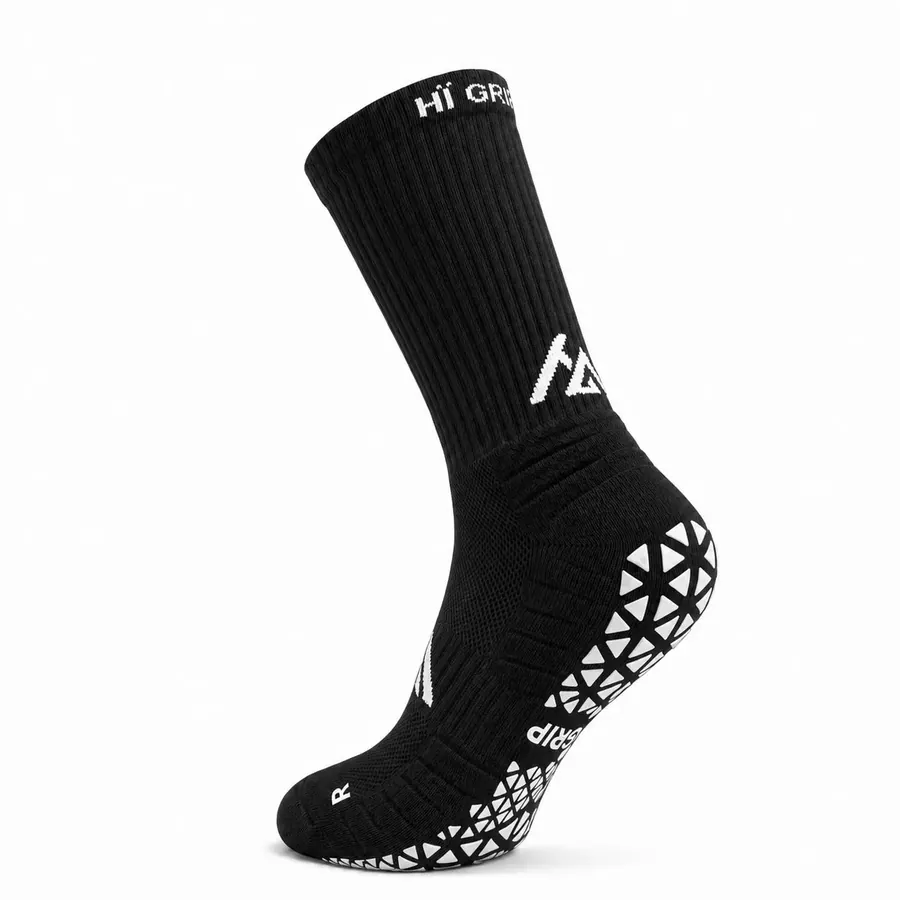
          </div>
          <div class="hp-02-card__head">
            <h3 class="hp-02-card__name">Performance Gripsokken 2.0 Zwart</h3>
            <span class="hp-02-card__price">€17,95</span>
          </div>
          <p class="hp-02-card__line">Compressie, Coolmax® en een naadloze teen.</p>
          <div class="hp-02-card__meta">
            <span class="hp-02-card__color"><span class="hp-02-card__swatch hp-02-card__swatch--black" aria-hidden="true"></span>Zwart</span>
            <span class="hp-02-card__sizes"><span class="hp-02-card__label">Maten</span> <span>35–38</span> <span aria-hidden="true">·</span> <span>39–42</span> <span aria-hidden="true">·</span> <span>43–47</span></span>
          </div>
        </a>
        <button class="hp-02-flip" type="button" aria-pressed="false"><span class="hp-sr">Bekijk de andere kant</span><svg viewBox="0 0 20 20" aria-hidden="true"><path d="M3.5 8.5a6.5 6.5 0 0 1 11.6-3.2M16.5 11.5a6.5 6.5 0 0 1-11.6 3.2" fill="none" stroke="currentColor" stroke-width="1.75" stroke-linecap="round"/><path d="M15.6 1.8v3.9h-3.9M4.4 18.2v-3.9h3.9" fill="none" stroke="currentColor" stroke-width="1.75" stroke-linecap="round" stroke-linejoin="round"/></svg></button>
      </li>

      <li class="hp-02-card" data-hp-02-card>
        <a class="hp-02-card__link" href="https://www.higrip.nl/products/performance-gripsokken-2-0-wit">
          <div class="hp-02-card__media">
            
            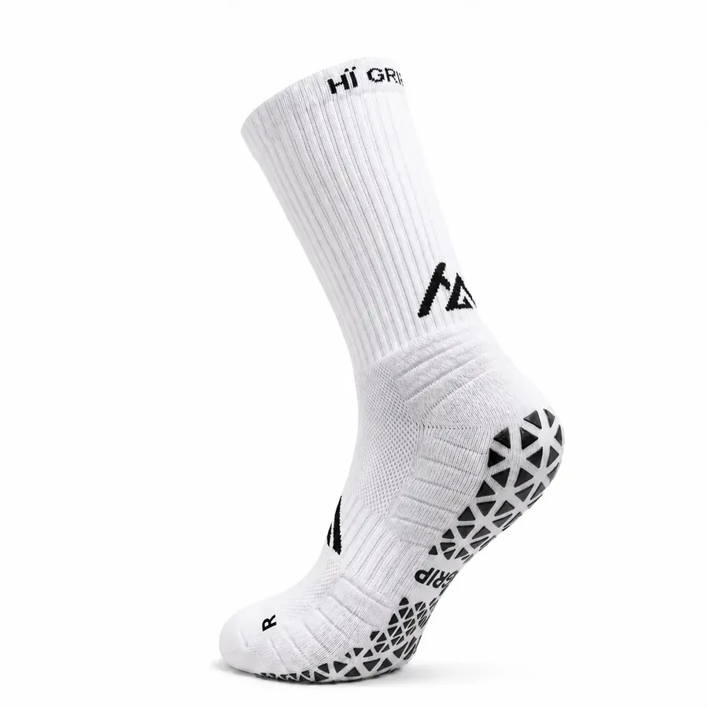
          </div>
          <div class="hp-02-card__head">
            <h3 class="hp-02-card__name">Performance Gripsokken 2.0 Wit</h3>
            <span class="hp-02-card__price">€17,95</span>
          </div>
          <p class="hp-02-card__line">Dezelfde 2.0, in wit.</p>
          <div class="hp-02-card__meta">
            <span class="hp-02-card__color"><span class="hp-02-card__swatch" aria-hidden="true"></span>Wit</span>
            <span class="hp-02-card__sizes"><span class="hp-02-card__label">Maten</span> <span>35–38</span> <span aria-hidden="true">·</span> <span>39–42</span> <span aria-hidden="true">·</span> <span>43–47</span></span>
          </div>
        </a>
        <button class="hp-02-flip" type="button" aria-pressed="false"><span class="hp-sr">Bekijk de andere kant</span><svg viewBox="0 0 20 20" aria-hidden="true"><path d="M3.5 8.5a6.5 6.5 0 0 1 11.6-3.2M16.5 11.5a6.5 6.5 0 0 1-11.6 3.2" fill="none" stroke="currentColor" stroke-width="1.75" stroke-linecap="round"/><path d="M15.6 1.8v3.9h-3.9M4.4 18.2v-3.9h3.9" fill="none" stroke="currentColor" stroke-width="1.75" stroke-linecap="round" stroke-linejoin="round"/></svg></button>
      </li>

      <li class="hp-02-card" data-hp-02-card>
        <a class="hp-02-card__link" href="https://www.higrip.nl/products/performance-gripsokken">
          <div class="hp-02-card__media">
            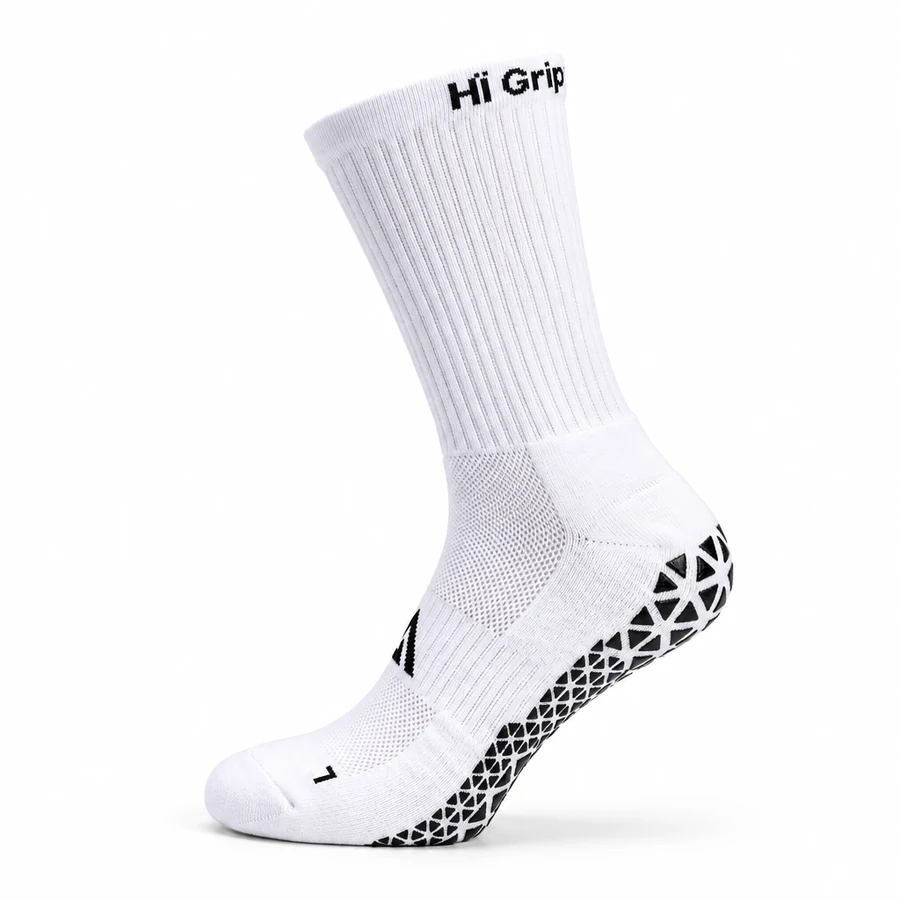
            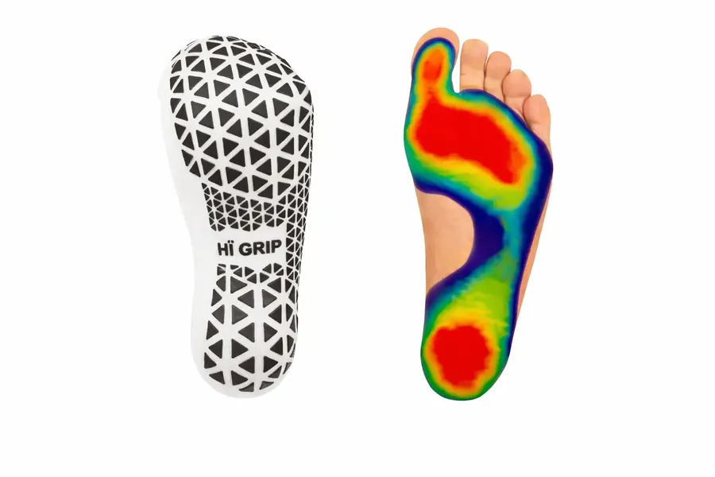
          </div>
          <div class="hp-02-card__head">
            <h3 class="hp-02-card__name">Performance Gripsokken</h3>
            <span class="hp-02-card__price">€14,95</span>
          </div>
          <p class="hp-02-card__line">Het origineel. Grip onder de zool, voor elke training.</p>
          <div class="hp-02-card__meta">
            <span class="hp-02-card__packs">3 paar €35,95 · 5 paar €54,95</span>
            <span class="hp-02-card__sizes"><span class="hp-02-card__label">Maten</span> <span>34–39</span> <span aria-hidden="true">·</span> <span>40–46</span></span>
          </div>
        </a>
        <button class="hp-02-flip" type="button" aria-pressed="false"><span class="hp-sr">Bekijk de andere kant</span><svg viewBox="0 0 20 20" aria-hidden="true"><path d="M3.5 8.5a6.5 6.5 0 0 1 11.6-3.2M16.5 11.5a6.5 6.5 0 0 1-11.6 3.2" fill="none" stroke="currentColor" stroke-width="1.75" stroke-linecap="round"/><path d="M15.6 1.8v3.9h-3.9M4.4 18.2v-3.9h3.9" fill="none" stroke="currentColor" stroke-width="1.75" stroke-linecap="round" stroke-linejoin="round"/></svg></button>
      </li>
    </ul>

    <a class="hp-pill hp-02-cta" href="https://www.higrip.nl/collections/gripsokken">Alle gripsokken<span class="hp-pill__chev" aria-hidden="true"><svg viewBox="0 0 14 14"><path d="M5 2.5 9.5 7 5 11.5" fill="none" stroke="currentColor" stroke-width="2"/></svg></span></a>
  </div>
</section>

<section class="hp-section hp-03" data-hp="03" aria-label="Waarom sporters voor HÏ Grip kiezen">
  <div class="hp-container">
    <ul class="hp-03-list">
      <li class="hp-03-item"><strong class="hp-03-num">3500+</strong> sporters gingen je voor</li>
      <li class="hp-03-item"><span class="hp-03-star" aria-hidden="true">★</span><strong class="hp-03-num">4,6</strong> op <a class="hp-03-link" href="https://nl.trustpilot.com/review/higrip.nl" target="_blank" rel="noopener">Trustpilot</a></li>
      <li class="hp-03-item">Binnen <strong class="hp-03-num">1 werkdag</strong> verzonden</li>
    </ul>
  </div>
</section>

<section class="hp-section hp-04" data-hp="04" aria-labelledby="hp-04-h2" data-label-close="Sluiten" data-label-prev="Vorige foto" data-label-next="Volgende foto" data-label-count="Foto {n} van {total}">
  <div class="hp-container hp-04-head">
    <h2 class="hp-h2 hp-04-h2" id="hp-04-h2">Op de baan, het veld en in de gym</h2>
    <p class="hp-lead hp-04-lead">Echte sporters, echte wedstrijden. Sleep door de foto's en open er een om hem groot te zien.</p>
    <p class="hp-04-hint"><svg class="hp-04-hint__icon" viewBox="0 0 24 12" aria-hidden="true"><path d="M5 2 1 6l4 4M19 2l4 4-4 4M1 6h22" fill="none" stroke="currentColor" stroke-width="1.6"/></svg><span class="hp-04-hint__pointer">Sleep of klik op een foto</span><span class="hp-04-hint__touch">Swipe of tik op een foto</span></p>
  </div>

  <div class="hp-04-viewport" role="region" aria-label="Foto's van sporters met HÏ Grip, sleep om te bladeren">
    <ul class="hp-04-track">
      <li class="hp-04-item">
        <figure class="hp-04-fig">
          <button class="hp-media hp-04-photo" type="button" style="--hp-ar: 1800 / 1200" data-full="img/sp-padel-voeten-1800.webp" data-srcset="img/sp-padel-voeten-900.webp 900w, img/sp-padel-voeten-1800.webp 1800w" data-w="1800" data-h="1200">
            
            <span class="hp-04-cue" aria-hidden="true"><span class="hp-04-cue__icon"><svg viewBox="0 0 14 14"><path d="M8.5 1.5h4v4M5.5 12.5h-4v-4M12.5 1.5 8 6M1.5 12.5 6 8" fill="none" stroke="currentColor" stroke-width="1.6"/></svg></span><span class="hp-04-cue__label">Open foto</span></span>
          </button>
          <figcaption class="hp-04-cap">Padel</figcaption>
        </figure>
      </li>
      <li class="hp-04-item">
        <figure class="hp-04-fig">
          <button class="hp-media hp-04-photo" type="button" style="--hp-ar: 1800 / 1200" data-full="img/sp-voetbal-zool-1800.webp" data-srcset="img/sp-voetbal-zool-900.webp 900w, img/sp-voetbal-zool-1800.webp 1800w" data-w="1800" data-h="1200">
            
            <span class="hp-04-cue" aria-hidden="true"><span class="hp-04-cue__icon"><svg viewBox="0 0 14 14"><path d="M8.5 1.5h4v4M5.5 12.5h-4v-4M12.5 1.5 8 6M1.5 12.5 6 8" fill="none" stroke="currentColor" stroke-width="1.6"/></svg></span><span class="hp-04-cue__label">Open foto</span></span>
          </button>
          <figcaption class="hp-04-cap">Voetbal</figcaption>
        </figure>
      </li>
      <li class="hp-04-item">
        <figure class="hp-04-fig">
          <button class="hp-media hp-04-photo" type="button" style="--hp-ar: 1800 / 1200" data-full="img/sp-gym-1800.webp" data-srcset="img/sp-gym-900.webp 900w, img/sp-gym-1800.webp 1800w" data-w="1800" data-h="1200">
            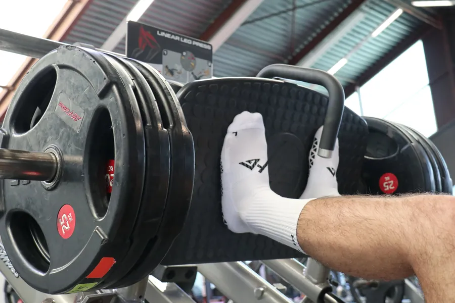
            <span class="hp-04-cue" aria-hidden="true"><span class="hp-04-cue__icon"><svg viewBox="0 0 14 14"><path d="M8.5 1.5h4v4M5.5 12.5h-4v-4M12.5 1.5 8 6M1.5 12.5 6 8" fill="none" stroke="currentColor" stroke-width="1.6"/></svg></span><span class="hp-04-cue__label">Open foto</span></span>
          </button>
          <figcaption class="hp-04-cap">Gym</figcaption>
        </figure>
      </li>
      <li class="hp-04-item">
        <figure class="hp-04-fig">
          <button class="hp-media hp-04-photo" type="button" style="--hp-ar: 1800 / 2180" data-full="img/sp-indoor-1800.webp" data-srcset="img/sp-indoor-900.webp 900w, img/sp-indoor-1800.webp 1800w" data-w="1800" data-h="2180">
            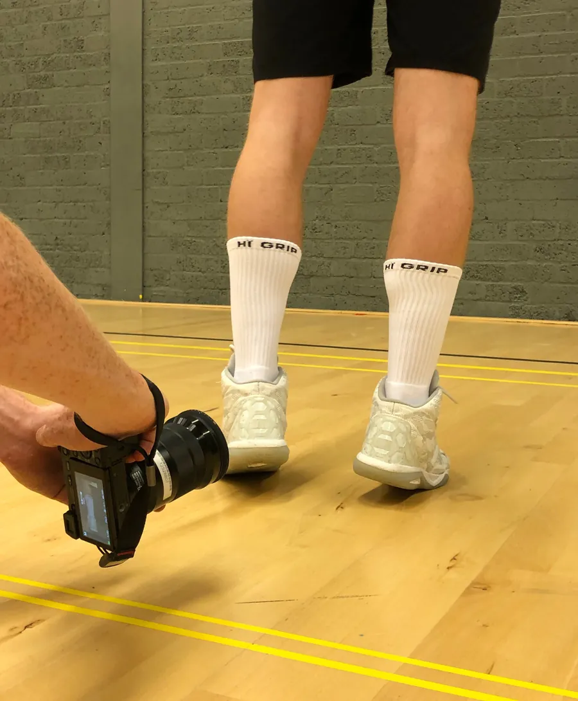
            <span class="hp-04-cue" aria-hidden="true"><span class="hp-04-cue__icon"><svg viewBox="0 0 14 14"><path d="M8.5 1.5h4v4M5.5 12.5h-4v-4M12.5 1.5 8 6M1.5 12.5 6 8" fill="none" stroke="currentColor" stroke-width="1.6"/></svg></span><span class="hp-04-cue__label">Open foto</span></span>
          </button>
          <figcaption class="hp-04-cap">Indoor</figcaption>
        </figure>
      </li>
      <li class="hp-04-item">
        <figure class="hp-04-fig">
          <button class="hp-media hp-04-photo" type="button" style="--hp-ar: 1100 / 1100" data-full="img/sp-hardlopen-1100.webp" data-srcset="img/sp-hardlopen-1100.webp 1100w" data-w="1100" data-h="1100">
            
            <span class="hp-04-cue" aria-hidden="true"><span class="hp-04-cue__icon"><svg viewBox="0 0 14 14"><path d="M8.5 1.5h4v4M5.5 12.5h-4v-4M12.5 1.5 8 6M1.5 12.5 6 8" fill="none" stroke="currentColor" stroke-width="1.6"/></svg></span><span class="hp-04-cue__label">Open foto</span></span>
          </button>
          <figcaption class="hp-04-cap">Hardlopen</figcaption>
        </figure>
      </li>
      <li class="hp-04-item">
        <figure class="hp-04-fig">
          <button class="hp-media hp-04-photo" type="button" style="--hp-ar: 2400 / 898" data-full="img/sp-team-2400.webp" data-srcset="img/sp-team-1200.webp 1200w, img/sp-team-2400.webp 2400w" data-w="2400" data-h="898">
            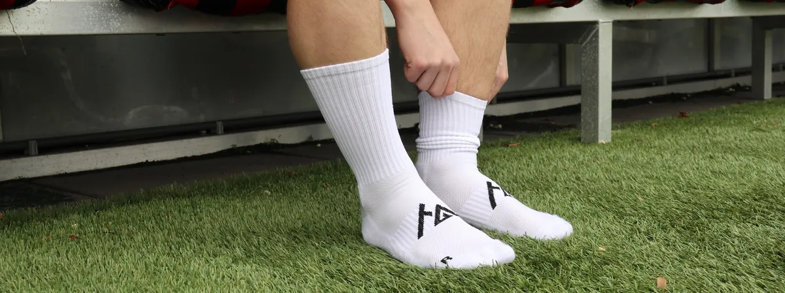
            <span class="hp-04-cue" aria-hidden="true"><span class="hp-04-cue__icon"><svg viewBox="0 0 14 14"><path d="M8.5 1.5h4v4M5.5 12.5h-4v-4M12.5 1.5 8 6M1.5 12.5 6 8" fill="none" stroke="currentColor" stroke-width="1.6"/></svg></span><span class="hp-04-cue__label">Open foto</span></span>
          </button>
          <figcaption class="hp-04-cap">Het hele team</figcaption>
        </figure>
      </li>
      <li class="hp-04-item">
        <figure class="hp-04-fig">
          <button class="hp-media hp-04-photo" type="button" style="--hp-ar: 1179 / 843" data-full="img/sp-tennis-wit-1179.webp" data-srcset="img/sp-tennis-wit-1179.webp 1179w" data-w="1179" data-h="843">
            
            <span class="hp-04-cue" aria-hidden="true"><span class="hp-04-cue__icon"><svg viewBox="0 0 14 14"><path d="M8.5 1.5h4v4M5.5 12.5h-4v-4M12.5 1.5 8 6M1.5 12.5 6 8" fill="none" stroke="currentColor" stroke-width="1.6"/></svg></span><span class="hp-04-cue__label">Open foto</span></span>
          </button>
          <figcaption class="hp-04-cap">Tennis</figcaption>
        </figure>
      </li>
      <li class="hp-04-item">
        <figure class="hp-04-fig">
          <button class="hp-media hp-04-photo" type="button" style="--hp-ar: 1024 / 768" data-full="img/sp-voetbal-bal-1024.webp" data-srcset="img/sp-voetbal-bal-1024.webp 1024w" data-w="1024" data-h="768">
            
            <span class="hp-04-cue" aria-hidden="true"><span class="hp-04-cue__icon"><svg viewBox="0 0 14 14"><path d="M8.5 1.5h4v4M5.5 12.5h-4v-4M12.5 1.5 8 6M1.5 12.5 6 8" fill="none" stroke="currentColor" stroke-width="1.6"/></svg></span><span class="hp-04-cue__label">Open foto</span></span>
          </button>
          <figcaption class="hp-04-cap">Voetbal</figcaption>
        </figure>
      </li>
    </ul>
  </div>

  <div class="hp-container">
    <div class="hp-04-progress" aria-hidden="true"><span class="hp-04-progress__bar"></span></div>
  </div>
</section>

<section class="hp-section hp-05" data-hp="05" aria-labelledby="hp-05-h2">
  <div class="hp-container">
    <header class="hp-05-head">
      <h2 class="hp-h2 hp-05-h2" id="hp-05-h2">Elke zone heeft een taak.</h2>
      <p class="hp-lead hp-05-lead">De Performance Gripsokken 2.0 in 360°. Ga met je muis over een feature of tik erop, en zie waar hij zit.</p>
    </header>

    <div class="hp-05-grid">
      <ol class="hp-05-list hp-05-list--l">
        <li><button class="hp-05-feat" type="button" data-f="compressie" data-no="1" aria-pressed="false" aria-controls="hp-05-stage"><span class="hp-05-feat__no" aria-hidden="true">1</span><span class="hp-05-feat__name">Compressie</span><span class="hp-05-feat__text">15–20 mmHg ondersteunt je doorbloeding tijdens inspanning.</span></button></li>
        <li><button class="hp-05-feat" type="button" data-f="coolmax" data-no="2" aria-pressed="false" aria-controls="hp-05-stage"><span class="hp-05-feat__no" aria-hidden="true">2</span><span class="hp-05-feat__name">Coolmax®</span><span class="hp-05-feat__text">30% Coolmax® voert vocht direct af van je huid.</span></button></li>
        <li><button class="hp-05-feat" type="button" data-f="ademend" data-no="3" aria-pressed="false" aria-controls="hp-05-stage"><span class="hp-05-feat__no" aria-hidden="true">3</span><span class="hp-05-feat__name">Ademend</span><span class="hp-05-feat__text">Open structuur bovenop je voet.</span></button></li>
        <li><button class="hp-05-feat" type="button" data-f="naadloos" data-no="4" aria-pressed="false" aria-controls="hp-05-stage"><span class="hp-05-feat__no" aria-hidden="true">4</span><span class="hp-05-feat__name">Naadloos</span><span class="hp-05-feat__text">Rondom gebreid zonder stiksels, met een naadloze teenzone.</span></button></li>
      </ol>

      <div class="hp-05-media">
        <div class="hp-05-stage" id="hp-05-stage" tabindex="0" role="slider" aria-label="Sleep om te draaien" aria-valuemin="0" aria-valuemax="359" aria-valuenow="0">
          
          <canvas class="hp-05-stage__canvas" aria-hidden="true"></canvas>
          <span class="hp-05-mark" aria-hidden="true"><span class="hp-05-mark__ring"><span class="hp-05-mark__no"></span></span></span>
        </div>
        <div class="hp-05-controls">
          <p class="hp-05-hint"><svg viewBox="0 0 22 12" aria-hidden="true"><path d="M5 1.5 1 6l4 4.5M17 1.5 21 6l-4 4.5M1 6h20" fill="none" stroke="currentColor" stroke-width="1.6"/></svg>Sleep om te draaien</p>
          <span class="hp-05-dial" aria-hidden="true"><span class="hp-05-dial__tick"></span></span>
          <button class="hp-05-reset" type="button" aria-controls="hp-05-stage">Hele sok</button>
        </div>
      </div>

      <div class="hp-05-col">
        <ol class="hp-05-list hp-05-list--r" start="5">
          <li><button class="hp-05-feat" type="button" data-f="hiel" data-no="5" aria-pressed="false" aria-controls="hp-05-stage"><span class="hp-05-feat__no" aria-hidden="true">5</span><span class="hp-05-feat__name">Versterkte hiel</span><span class="hp-05-feat__text">Extra dikte precies onder je hiel.</span></button></li>
          <li><button class="hp-05-feat" type="button" data-f="grip" data-no="6" aria-pressed="false" aria-controls="hp-05-stage"><span class="hp-05-feat__no" aria-hidden="true">6</span><span class="hp-05-feat__name">Maximale grip</span><span class="hp-05-feat__text">Siliconen zones houden je voet vast in je schoen.</span></button></li>
          <li><button class="hp-05-feat" type="button" data-f="cushioning" data-no="7" aria-pressed="false" aria-controls="hp-05-stage"><span class="hp-05-feat__no" aria-hidden="true">7</span><span class="hp-05-feat__name">Special cushioning</span><span class="hp-05-feat__text">Dempingzones onder je voet.</span></button></li>
        </ol>
        <div class="hp-05-buy">
          <p class="hp-05-buy__name">Performance Gripsokken 2.0</p>
          <p class="hp-05-buy__meta"><span class="hp-05-buy__price">€17,95</span><span aria-hidden="true">·</span><span>Zwart of wit</span></p>
          <a class="hp-pill hp-05-cta" href="https://www.higrip.nl/products/performance-gripsokken-2-0-zwart">Shop de 2.0<span class="hp-pill__chev" aria-hidden="true"><svg viewBox="0 0 14 14"><path d="M5 2.5 9.5 7 5 11.5" fill="none" stroke="currentColor" stroke-width="2"/></svg></span></a>
        </div>
      </div>
    </div>
  </div>
</section>

<section class="hp-section hp-06" data-hp="06">
  <div class="hp-container">
    <p class="hp-06-statement" data-hp-06-words>Je schoen grijpt de vloer. HÏ&nbsp;Grip zorgt dat je voet je schoen grijpt. Minder schuiven bij elke stop, elke draai en elke sprint, tot de laatste bal.</p>
  </div>
</section>

<section class="hp-section hp-07" data-hp="07" id="sporten" data-sport="padel" aria-labelledby="hp-07-h2">
  <div class="hp-container hp-07-head">
    <h2 class="hp-h2 hp-07-h2" id="hp-07-h2">Kies je sport</h2>
    <p class="hp-lead hp-07-lead">Elke sport vraagt iets anders van je voet. Kies de jouwe en lees waarom grip daar telt.</p>
  </div>

  <!-- Rij met sportkaarten: hpDrag (center), een sleep telt niet als klik. Klik op een buurkaart centreert eerst. -->
  <div class="hp-07-viewport" role="group" aria-label="Sporten, sleep of gebruik de pijltjes">
    <ul class="hp-07-track">
      <li class="hp-07-item is-active" data-sport="padel">
        <a class="hp-07-card" href="https://www.higrip.nl/pages/gripsokken-voor-padel" aria-label="Gripsokken voor padel" aria-describedby="hp-07-line-padel" draggable="false">
          <div class="hp-07-frame">
            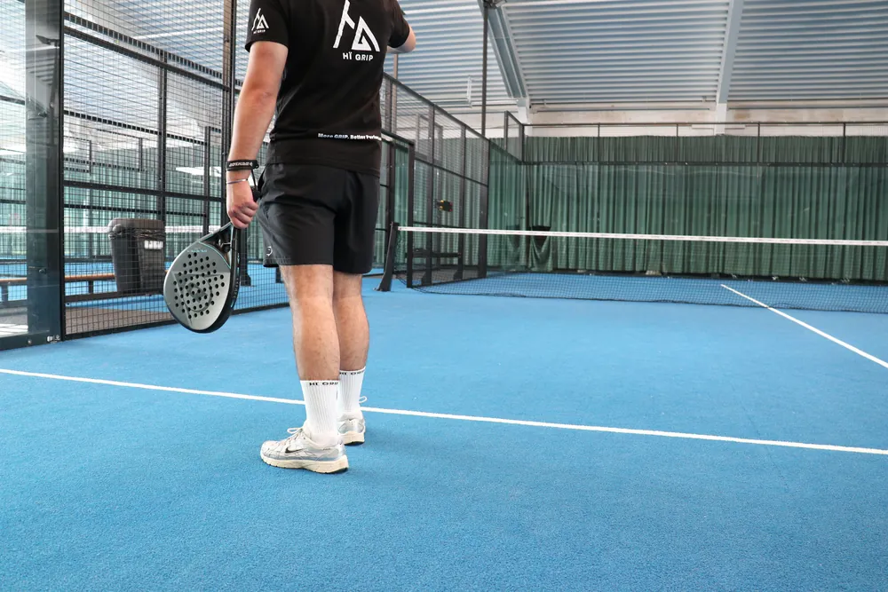
          </div>
          <div class="hp-07-copy">
            <h3 class="hp-07-name">Padel</h3>
            <p class="hp-07-line" id="hp-07-line-padel">Uit het glas, terug naar het net. Je voet blijft staan als jij afremt.</p>
            <span class="hp-07-chev" aria-hidden="true"><svg viewBox="0 0 14 14"><path d="M5 2.5 9.5 7 5 11.5" fill="none" stroke="currentColor" stroke-width="2"/></svg></span>
          </div>
        </a>
      </li>
      <li class="hp-07-item" data-sport="tennis">
        <a class="hp-07-card" href="https://www.higrip.nl/pages/gripsokken-voor-tennis" aria-label="Gripsokken voor tennis" aria-describedby="hp-07-line-tennis" draggable="false" tabindex="-1">
          <div class="hp-07-frame">
            
          </div>
          <div class="hp-07-copy">
            <h3 class="hp-07-name">Tennis</h3>
            <p class="hp-07-line" id="hp-07-line-tennis">Split-step, landen, wegduwen. Geen speling in je schoen bij de eerste stap.</p>
            <span class="hp-07-chev" aria-hidden="true"><svg viewBox="0 0 14 14"><path d="M5 2.5 9.5 7 5 11.5" fill="none" stroke="currentColor" stroke-width="2"/></svg></span>
          </div>
        </a>
      </li>
      <li class="hp-07-item" data-sport="voetbal">
        <a class="hp-07-card" href="https://www.higrip.nl/pages/gripsokken-voor-voetbal" aria-label="Gripsokken voor voetbal" aria-describedby="hp-07-line-voetbal" draggable="false" tabindex="-1">
          <div class="hp-07-frame">
            
          </div>
          <div class="hp-07-copy">
            <h3 class="hp-07-name">Voetbal</h3>
            <p class="hp-07-line" id="hp-07-line-voetbal">Wegdraaien bij je man zonder dat je voet in je schoen meedraait.</p>
            <span class="hp-07-chev" aria-hidden="true"><svg viewBox="0 0 14 14"><path d="M5 2.5 9.5 7 5 11.5" fill="none" stroke="currentColor" stroke-width="2"/></svg></span>
          </div>
        </a>
      </li>
      <li class="hp-07-item" data-sport="rugby">
        <a class="hp-07-card" href="https://www.higrip.nl/pages/gripsokken-voor-rugby" aria-label="Gripsokken voor rugby" aria-describedby="hp-07-line-rugby" draggable="false" tabindex="-1">
          <div class="hp-07-frame">
            
          </div>
          <div class="hp-07-copy">
            <h3 class="hp-07-name">Rugby</h3>
            <p class="hp-07-line" id="hp-07-line-rugby">Duwen in de scrum tot de bal eruit is. Je voet geeft geen centimeter weg.</p>
            <span class="hp-07-chev" aria-hidden="true"><svg viewBox="0 0 14 14"><path d="M5 2.5 9.5 7 5 11.5" fill="none" stroke="currentColor" stroke-width="2"/></svg></span>
          </div>
        </a>
      </li>
    </ul>
  </div>

  <div class="hp-container hp-07-controls">
    <button class="hp-07-btn hp-07-prev" type="button" aria-label="Vorige sport"><svg viewBox="0 0 14 14" aria-hidden="true"><path d="M9 2.5 4.5 7 9 11.5" fill="none" stroke="currentColor" stroke-width="1.8"/></svg></button>
    <button class="hp-07-btn hp-07-next" type="button" aria-label="Volgende sport"><svg viewBox="0 0 14 14" aria-hidden="true"><path d="M5 2.5 9.5 7 5 11.5" fill="none" stroke="currentColor" stroke-width="1.8"/></svg></button>
  </div>
  <p class="hp-sr hp-07-status" aria-live="polite" data-template="{sport}, sport {n} van {total}"></p>
</section>

<section class="hp-section hp-08" data-hp="08" aria-labelledby="hp-08-h2">
  <div class="hp-container hp-08-grid">
    <div class="hp-08-text">
      <h2 class="hp-08-loop" id="hp-08-h2">
        <span class="hp-sr">Sportswear is het fundament van presteren.</span>
        <span class="hp-08-lines" aria-hidden="true">
          <span class="hp-08-line" data-s="2">Sportswear</span>
          <span class="hp-08-line" data-s="2">is het</span>
          <span class="hp-08-line" data-s="2">fundament van</span>
          <span class="hp-08-line" data-s="2">presteren.</span>
        </span>
      </h2>
      <div class="hp-08-foot">
        <p class="hp-08-body">HÏ Grip begon bij sporters die naast hun studie een eigen merk bouwen. We startten vanuit de passie voor sporten en presteren, en we geven nooit op. Daarom maken we sportswear die een stap verder gaat. Geen 100%, maar 110%.</p>
        <a class="hp-pill hp-pill--light hp-08-cta" href="https://www.higrip.nl/pages/over-ons">Ons verhaal<span class="hp-pill__chev" aria-hidden="true"><svg viewBox="0 0 14 14"><path d="M5 2.5 9.5 7 5 11.5" fill="none" stroke="currentColor" stroke-width="2"/></svg></span></a>
      </div>
    </div>
    <figure class="hp-08-media">
      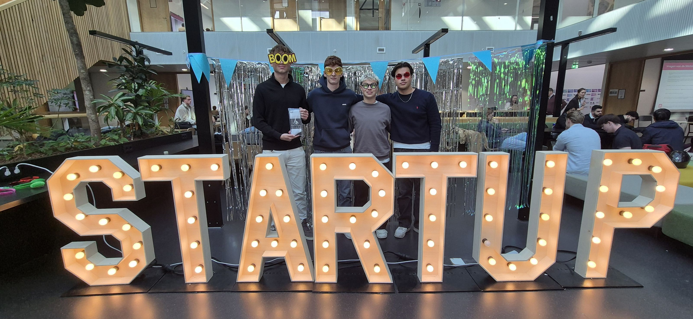
    </figure>
  </div>
</section>

<section class="hp-section hp-09" data-hp="09" aria-labelledby="hp-09-h2">
  <div class="hp-container hp-09-inner">
    <h2 class="hp-h2 hp-09-h2" id="hp-09-h2">Clubs, winkels en studio's gingen je voor</h2>

    <ul class="hp-09-groups" data-hp-09-groups>
      <li class="hp-09-group">
        <h3 class="hp-09-label">Voetbal</h3>
        <ul class="hp-09-names">
          <li class="hp-09-name"><span class="hp-09-name__text">SVS</span></li>
          <li class="hp-09-name">
            <span class="hp-09-logo hp-09-logo--shield">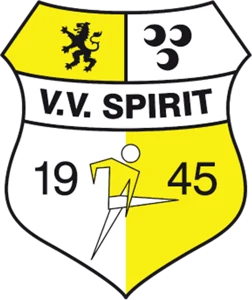</span>
            <span class="hp-09-name__text">V.V. Spirit</span>
          </li>
          <li class="hp-09-name"><span class="hp-09-name__text">V.V. Lyra</span></li>
          <li class="hp-09-name">
            <span class="hp-09-logo hp-09-logo--shield hp-09-logo--crop"></span>
            <span class="hp-09-name__text">Concordia</span>
          </li>
        </ul>
      </li>

      <li class="hp-09-group">
        <h3 class="hp-09-label">Retail</h3>
        <ul class="hp-09-names">
          <li class="hp-09-name">
            <span class="hp-09-logo"></span>
            <span class="hp-09-name__text">Sport 2000</span>
          </li>
        </ul>
        <p class="hp-09-detail">Naaldwijk en Nootdorp</p>
      </li>

      <li class="hp-09-group">
        <h3 class="hp-09-label">Pilates</h3>
        <ul class="hp-09-names">
          <li class="hp-09-name">
            <span class="hp-09-logo hp-09-logo--wide"></span>
            <span class="hp-09-name__text">MyHealth Club</span>
          </li>
          <li class="hp-09-name">
            <span class="hp-09-logo hp-09-logo--tile"></span>
            <span class="hp-09-name__text">Say Yes To Health</span>
          </li>
        </ul>
      </li>

      <li class="hp-09-group">
        <h3 class="hp-09-label">En verder</h3>
        <ul class="hp-09-names">
          <li class="hp-09-name">
            <span class="hp-09-logo hp-09-logo--tile"></span>
            <span class="hp-09-name__text">Hogeschool Rotterdam</span>
          </li>
        </ul>
      </li>
    </ul>
  </div>
</section>

<section class="hp-section hp-10" data-hp="10" aria-labelledby="hp-10-h2">
  <div class="hp-container hp-10-inner">
    <h2 class="hp-h2 hp-10-h2" id="hp-10-h2">HÏ Grip voor je club, winkel of studio</h2>
    <p class="hp-lead hp-10-lead">Eén sok voor het hele team, grip in je schap of een eigen ontwerp voor je studio. Je begint met een gratis sample.</p>

    <ul class="hp-10-cards" data-hp-10-cards>
      <li class="hp-10-item">
        <a class="hp-10-card hp-10-card--club" href="https://www.higrip.nl/pages/zakelijk#clubs" aria-labelledby="hp-10-t-voetbal" aria-describedby="hp-10-d-voetbal">
          <div class="hp-10-media hp-10-media--photo">
            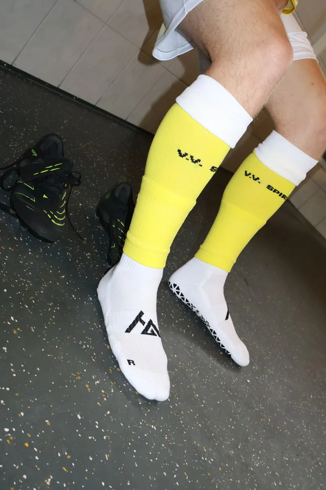
          </div>
          <div class="hp-10-body">
            <h3 class="hp-10-title" id="hp-10-t-voetbal">Voetbalclubs</h3>
            <p class="hp-10-text" id="hp-10-d-voetbal">Eigen logo en kleuren vanaf 150 paar. Eén uitstraling op het veld, voor al je teams.</p>
            <span class="hp-10-cue" aria-hidden="true">Voor clubs<span class="hp-10-chev"><svg viewBox="0 0 14 14"><path d="M5 2.5 9.5 7 5 11.5" fill="none" stroke="currentColor" stroke-width="2"/></svg></span></span>
          </div>
        </a>
      </li>

      <li class="hp-10-item">
        <a class="hp-10-card hp-10-card--retail" href="https://www.higrip.nl/pages/zakelijk#retailers" aria-labelledby="hp-10-t-retail" aria-describedby="hp-10-d-retail">
          <div class="hp-10-media hp-10-media--product">
            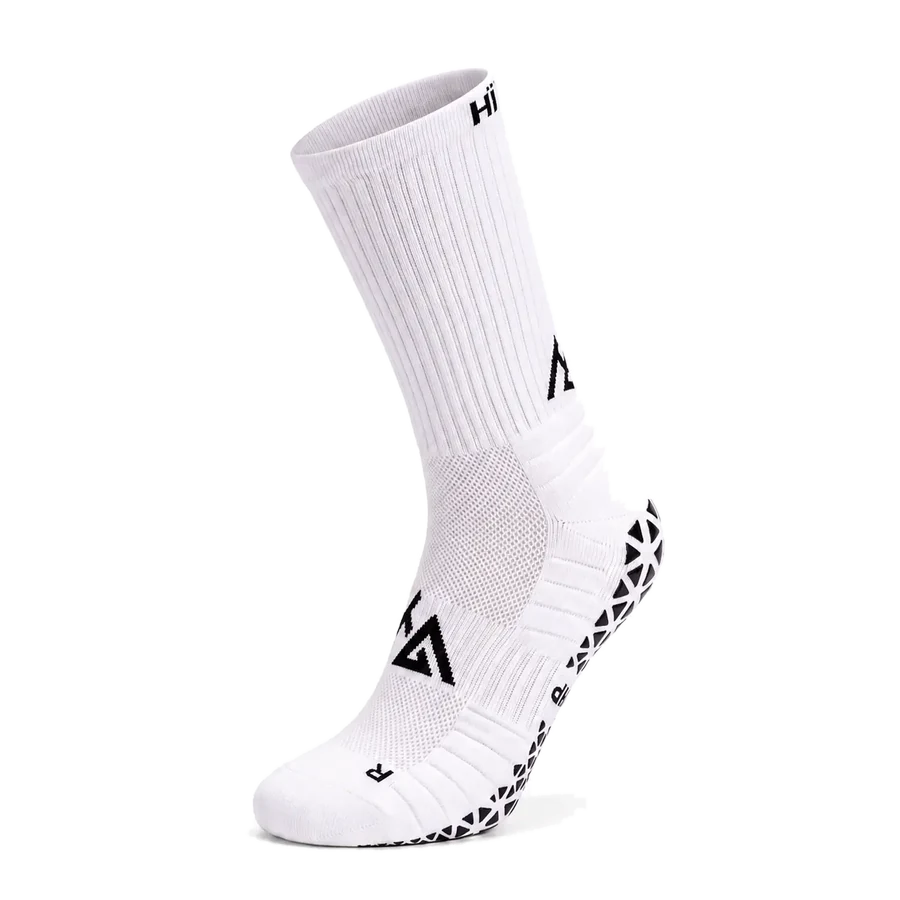
            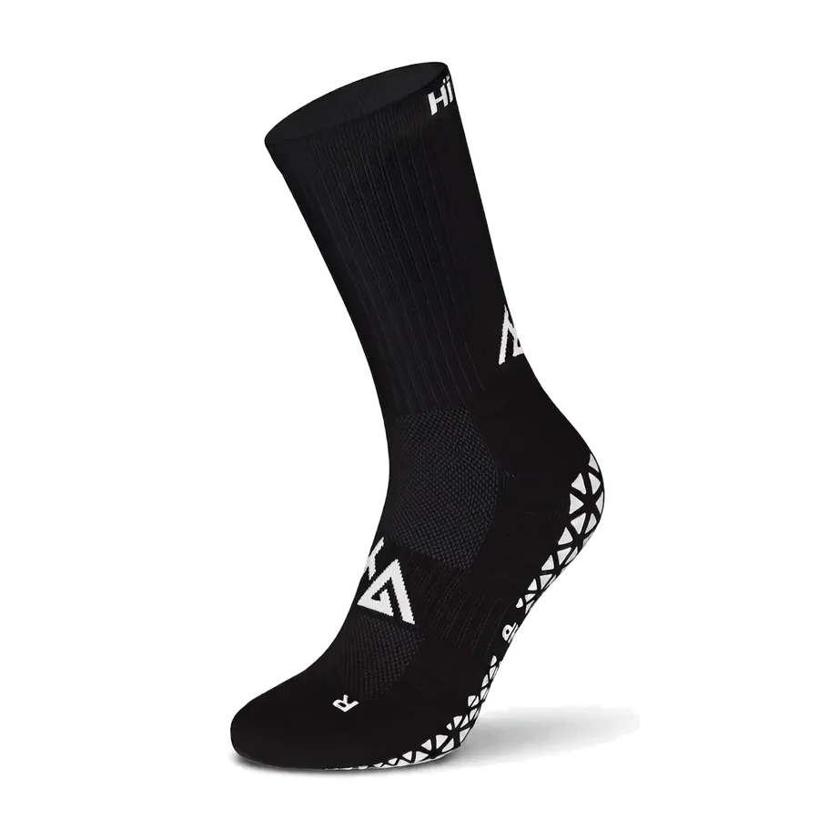
          </div>
          <div class="hp-10-body">
            <h3 class="hp-10-title" id="hp-10-t-retail">Sportwinkels</h3>
            <p class="hp-10-text" id="hp-10-d-retail">Staffelprijzen vanaf 6 paar en een adviesprijs van €19,95. Je klant voelt het verschil zodra hij hem aantrekt.</p>
            <span class="hp-10-cue" aria-hidden="true">Voor winkels<span class="hp-10-chev"><svg viewBox="0 0 14 14"><path d="M5 2.5 9.5 7 5 11.5" fill="none" stroke="currentColor" stroke-width="2"/></svg></span></span>
          </div>
        </a>
      </li>

      <li class="hp-10-item">
        <a class="hp-10-card hp-10-card--studio" href="https://www.higrip.nl/pages/zakelijk#clubs" aria-labelledby="hp-10-t-pilates" aria-describedby="hp-10-d-pilates">
          <div class="hp-10-media hp-10-media--product">
            
          </div>
          <div class="hp-10-body">
            <h3 class="hp-10-title" id="hp-10-t-pilates">Pilates en studio's</h3>
            <p class="hp-10-text" id="hp-10-d-pilates">Wij maken de sok voor jouw studio: kleur, lengte, logo en verpakking.</p>
            <span class="hp-10-cue" aria-hidden="true">Voor studio's<span class="hp-10-chev"><svg viewBox="0 0 14 14"><path d="M5 2.5 9.5 7 5 11.5" fill="none" stroke="currentColor" stroke-width="2"/></svg></span></span>
          </div>
        </a>
      </li>
    </ul>

    <a class="hp-pill hp-10-cta" href="https://www.higrip.nl/pages/zakelijk">Vraag een gratis sample<span class="hp-pill__chev" aria-hidden="true"><svg viewBox="0 0 14 14"><path d="M5 2.5 9.5 7 5 11.5" fill="none" stroke="currentColor" stroke-width="2"/></svg></span></a>
  </div>
</section>

<section class="hp-section hp-11" data-hp="11" aria-labelledby="hp-11-h2">
  <div class="hp-container hp-11-wrap">
    <h2 class="hp-11-h2" id="hp-11-h2">Veelgestelde vragen</h2>
    <div class="hp-11-list">
    <details class="hp-11-item">
      <summary class="hp-11-sum"><h3 class="hp-11-q">Wat zijn gripsokken?</h3></summary>
      <div class="hp-11-a"><p>Gripsokken zijn sportsokken met een grippatroon op de zool. Dat patroon houdt je voet op zijn plek in je schoen, zodat je minder over je binnenzool glijdt bij afremmen, draaien en wegsprinten.</p></div>
    </details>
    <details class="hp-11-item">
      <summary class="hp-11-sum"><h3 class="hp-11-q">Werken gripsokken echt?</h3></summary>
      <div class="hp-11-a"><p>Wetenschappelijk aangetoond: gripsokken verhogen de statische wrijvingscoëfficiënt van 0,60 naar 1,17, dus 95% meer grip (Apps et al. 2022). Het onderzoek gaat over gripsokken in het algemeen, niet over een test van HÏ Grip.</p></div>
    </details>
    <details class="hp-11-item">
      <summary class="hp-11-sum"><h3 class="hp-11-q">Voor welke sporten zijn gripsokken?</h3></summary>
      <div class="hp-11-a"><p>Voor elke sport waarin je snel afremt en draait: padel, tennis, voetbal en rugby. Per sport lees je op een eigen pagina waarom grip daar telt.</p></div>
    </details>
    <details class="hp-11-item">
      <summary class="hp-11-sum"><h3 class="hp-11-q">Wat is het verschil tussen de 1.0 en de 2.0?</h3></summary>
      <div class="hp-11-a"><p>Allebei hebben ze siliconen grip onder de zool. De 2.0 voegt 15–20 mmHg compressie, 30% Coolmax®, een naadloze teenzone, een versterkte hiel en special cushioning toe.</p></div>
    </details>
    <details class="hp-11-item">
      <summary class="hp-11-sum"><h3 class="hp-11-q">Wat kosten HÏ Grip gripsokken?</h3></summary>
      <div class="hp-11-a"><p>De Performance Gripsokken (1.0) kosten €14,95 per paar, €35,95 voor een 3-pack en €54,95 voor een 5-pack. De Performance Gripsokken 2.0 kosten €17,95 per paar, in zwart of wit.</p></div>
    </details>
    <details class="hp-11-item">
      <summary class="hp-11-sum"><h3 class="hp-11-q">Welke maat kies ik?</h3></summary>
      <div class="hp-11-a"><p>Kies de maat die bij je schoenmaat past. De 1.0 is er in 34–39 en 40–46, de 2.0 in 35–38, 39–42 en 43–47.</p></div>
    </details>
    <details class="hp-11-item">
      <summary class="hp-11-sum"><h3 class="hp-11-q">Kan mijn club of winkel zakelijk bestellen?</h3></summary>
      <div class="hp-11-a"><p>Ja. Sportwinkels bestellen met staffelprijzen vanaf 6 paar, clubs en studio's kunnen vanaf 150 paar een eigen logo en eigen kleuren laten maken. Een sample is gratis.</p></div>
    </details>
    </div>
  </div>
  <script type="application/ld+json">
{
  "@context": "https://schema.org",
  "@type": "FAQPage",
  "mainEntity": [
    {
      "@type": "Question",
      "name": "Wat zijn gripsokken?",
      "acceptedAnswer": {
        "@type": "Answer",
        "text": "Gripsokken zijn sportsokken met een grippatroon op de zool. Dat patroon houdt je voet op zijn plek in je schoen, zodat je minder over je binnenzool glijdt bij afremmen, draaien en wegsprinten."
      }
    },
    {
      "@type": "Question",
      "name": "Werken gripsokken echt?",
      "acceptedAnswer": {
        "@type": "Answer",
        "text": "Wetenschappelijk aangetoond: gripsokken verhogen de statische wrijvingscoëfficiënt van 0,60 naar 1,17, dus 95% meer grip (Apps et al. 2022). Het onderzoek gaat over gripsokken in het algemeen, niet over een test van HÏ Grip."
      }
    },
    {
      "@type": "Question",
      "name": "Voor welke sporten zijn gripsokken?",
      "acceptedAnswer": {
        "@type": "Answer",
        "text": "Voor elke sport waarin je snel afremt en draait: padel, tennis, voetbal en rugby. Per sport lees je op een eigen pagina waarom grip daar telt."
      }
    },
    {
      "@type": "Question",
      "name": "Wat is het verschil tussen de 1.0 en de 2.0?",
      "acceptedAnswer": {
        "@type": "Answer",
        "text": "Allebei hebben ze siliconen grip onder de zool. De 2.0 voegt 15–20 mmHg compressie, 30% Coolmax®, een naadloze teenzone, een versterkte hiel en special cushioning toe."
      }
    },
    {
      "@type": "Question",
      "name": "Wat kosten HÏ Grip gripsokken?",
      "acceptedAnswer": {
        "@type": "Answer",
        "text": "De Performance Gripsokken (1.0) kosten €14,95 per paar, €35,95 voor een 3-pack en €54,95 voor een 5-pack. De Performance Gripsokken 2.0 kosten €17,95 per paar, in zwart of wit."
      }
    },
    {
      "@type": "Question",
      "name": "Welke maat kies ik?",
      "acceptedAnswer": {
        "@type": "Answer",
        "text": "Kies de maat die bij je schoenmaat past. De 1.0 is er in 34–39 en 40–46, de 2.0 in 35–38, 39–42 en 43–47."
      }
    },
    {
      "@type": "Question",
      "name": "Kan mijn club of winkel zakelijk bestellen?",
      "acceptedAnswer": {
        "@type": "Answer",
        "text": "Ja. Sportwinkels bestellen met staffelprijzen vanaf 6 paar, clubs en studio's kunnen vanaf 150 paar een eigen logo en eigen kleuren laten maken. Een sample is gratis."
      }
    }
  ]
}
  </script>
</section>

<section class="hp-section hp-12" data-hp="12" aria-labelledby="hp-12-h">
  <div class="hp-container hp-12-inner">
    <h2 class="hp-12-title" id="hp-12-h"><span class="hp-12-l hp-12-l--1">Ga door waar</span> <span class="hp-12-l hp-12-l--2">anderen stoppen.</span></h2>
    <a class="hp-pill hp-pill--light hp-12-cta" href="https://www.higrip.nl/collections/gripsokken">Shop gripsokken<span class="hp-pill__chev" aria-hidden="true"><svg viewBox="0 0 14 14"><path d="M5 2.5 9.5 7 5 11.5" fill="none" stroke="currentColor" stroke-width="2"/></svg></span></a>
  </div>
</section>

<section class="hp-section hp-13" data-hp="13">
  <footer class="hp-container hp-13-inner">
    <div class="hp-13-intro">
      <p class="hp-13-line">Performance Grip Socks voor de sporter die doorgaat waar anderen stoppen.</p>
      <p class="hp-13-slogan">More grip, better performance.</p>
    </div>

    <div class="hp-13-grid">
      <nav class="hp-13-col" aria-labelledby="hp-13-t-algemeen">
        <h2 class="hp-13-title" id="hp-13-t-algemeen">Algemeen</h2>
        <ul class="hp-13-list">
          <li><a class="hp-13-link" href="https://www.higrip.nl/policies/terms-of-service">Algemene voorwaarden</a></li>
          <li><a class="hp-13-link" href="https://www.higrip.nl/policies/legal-notice">Wettelijke kennisgeving</a></li>
          <li><a class="hp-13-link" href="https://www.higrip.nl/pages/verzendbeleid">Verzendbeleid</a></li>
          <li><a class="hp-13-link" href="https://www.higrip.nl/pages/retourbeleid">Retourbeleid</a></li>
          <li><a class="hp-13-link" href="https://www.higrip.nl/pages/terugbetalingsbeleid">Betalingsbeleid</a></li>
          <li><a class="hp-13-link" href="https://www.higrip.nl/pages/privacybeleid">Privacybeleid</a></li>
        </ul>
      </nav>

      <nav class="hp-13-col" aria-labelledby="hp-13-t-higrip">
        <h2 class="hp-13-title" id="hp-13-t-higrip">HÏ Grip</h2>
        <ul class="hp-13-list">
          <li><a class="hp-13-link" href="https://www.higrip.nl/pages/veelgestelde-vragen">Veelgestelde vragen</a></li>
          <li><a class="hp-13-link" href="https://www.higrip.nl/pages/over-ons">Over ons</a></li>
          <li><a class="hp-13-link" href="https://www.higrip.nl/pages/zakelijk">Zakelijk</a></li>
          <li><a class="hp-13-link" href="https://www.higrip.nl/pages/contact">Contact</a></li>
          <li><a class="hp-13-link" href="https://nl.trustpilot.com/review/higrip.nl">Reviews</a></li>
          <li><a class="hp-13-link" href="https://www.higrip.nl/blogs/hi-grip/waarom-hi-grip-gripsokken">Voordelen</a></li>
        </ul>
      </nav>

      <nav class="hp-13-col" aria-labelledby="hp-13-t-volg">
        <h2 class="hp-13-title" id="hp-13-t-volg">Volg ons</h2>
        <ul class="hp-13-list">
          <li><a class="hp-13-link" href="https://facebook.com/profile.php?id=61569860846565">Facebook</a></li>
          <li><a class="hp-13-link" href="https://instagram.com/higrip.nl">Instagram</a></li>
          <li><a class="hp-13-link" href="https://tiktok.com/@higrip.nl">TikTok</a></li>
          <li><a class="hp-13-link" href="https://linkedin.com/company/h%C3%AF-grip/about/">LinkedIn</a></li>
        </ul>
      </nav>

      <div class="hp-13-col">
        <h2 class="hp-13-title" id="hp-13-t-contact">Contact</h2>
        <address class="hp-13-contact">
          <p class="hp-13-contact__val">info@higrip.nl</p>
          <p class="hp-13-contact__val">+31 6 24 56 65 47</p>
          <dl class="hp-13-meta">
            <div class="hp-13-meta__row"><dt>KVK</dt><dd>97210129</dd></div>
            <div class="hp-13-meta__row"><dt>BTW</dt><dd>NL867952283B01</dd></div>
          </dl>
        </address>
      </div>
    </div>

    <div class="hp-13-base">
      <p class="hp-13-copy">© 2026 HÏ Grip</p>
      <div class="hp-13-pay">
        <h2 class="hp-13-pay__title" id="hp-13-t-pay">Betaalmethoden</h2>
        <ul class="hp-13-pay__list" aria-labelledby="hp-13-t-pay">
          <li>American Express</li>
          <li>Apple Pay</li>
          <li>Google Pay</li>
          <li>iDEAL Wero</li>
          <li>Klarna</li>
          <li>Maestro</li>
          <li>Mastercard</li>
          <li>PayPal</li>
          <li>Union Pay</li>
          <li>Visa</li>
        </ul>
      </div>
    </div>

    <p class="hp-13-mark" aria-hidden="true">HÏ Grip</p>
  </footer>
</section>

</main>
<script>
/* HÏ Grip homepage-prototype · base.js
   Gedeelde helpers. Secties gebruiken deze in plaats van eigen versies en registreren zelf geen globale listeners.
   - hpDrag(viewport, track, opts)  slepen/swipen met snap, pijltjestoetsen; een swipe telt niet als klik
   - hpReveal(el, opts)             zet .is-in als el in beeld komt; pagina is compleet in rust (geen opacity:0-wachtstanden)
   - hpInView(el, onEnter, onLeave) voor lussen die alleen in beeld mogen lopen
   - hpLightbox.open(items, index, trigger)  Esc en klik buiten sluiten, focus-trap, scroll-lock, nooit wegnavigeren
   - hpOnResize(fn)                 één gedeelde resize-listener
   - hpOnScroll(fn)                 één gedeelde scroll-listener (passief, per frame gebundeld)
   - hpReduced()                    true bij prefers-reduced-motion */
(function () {
  'use strict';
  var root = document.documentElement;
  var mqReduce = window.matchMedia('(prefers-reduced-motion: reduce)');
  function hpReduced() { return mqReduce.matches; }

  /* Motion staat pas aan als IO bestaat en de bezoeker geen reduced motion vraagt. Zonder deze klasse ziet alles er uit als de eindstand. */
  if ('IntersectionObserver' in window && !hpReduced()) root.classList.add('hp-motion');

  /* ---------- resize ---------- */
  var resizeFns = [];
  var resizeRaf = 0;
  window.addEventListener('resize', function () {
    if (resizeRaf) return;
    resizeRaf = requestAnimationFrame(function () { resizeRaf = 0; resizeFns.forEach(function (fn) { fn(); }); });
  });
  function hpOnResize(fn) { resizeFns.push(fn); }

  /* ---------- scroll (één gedeelde passieve listener, rAF-gebundeld) ---------- */
  var scrollFns = [];
  var scrollRaf = 0;
  window.addEventListener('scroll', function () {
    if (scrollRaf) return;
    scrollRaf = requestAnimationFrame(function () { scrollRaf = 0; scrollFns.forEach(function (fn) { fn(); }); });
  }, { passive: true });
  function hpOnScroll(fn) { scrollFns.push(fn); }

  /* ---------- reveal ---------- */
  var revealIO = null;
  var revealSet = [];
  function hpReveal(el, opts) {
    opts = opts || {};
    if (!el) return;
    if (!root.classList.contains('hp-motion')) { el.classList.add('is-in'); return; }
    if (!revealIO) {
      revealIO = new IntersectionObserver(function (entries) {
        entries.forEach(function (e) {
          if (!e.isIntersecting) return;
          e.target.classList.add('is-in');
          revealIO.unobserve(e.target);
        });
      }, { rootMargin: opts.rootMargin || '0px 0px -12% 0px', threshold: 0 });
    }
    revealSet.push(el);
    revealIO.observe(el);
  }
  /* Vangnet: als een observer om wat voor reden niet vuurt, staat alles na 2,5 s alsnog in de eindstand. */
  window.addEventListener('load', function () {
    setTimeout(function () { revealSet.forEach(function (el) { el.classList.add('is-in'); }); }, 2500);
  });

  function hpInView(el, onEnter, onLeave, opts) {
    if (!('IntersectionObserver' in window)) { onEnter && onEnter(); return function () {}; }
    var io = new IntersectionObserver(function (entries) {
      entries.forEach(function (e) {
        if (e.isIntersecting) { onEnter && onEnter(e); } else { onLeave && onLeave(e); }
      });
    }, { rootMargin: (opts && opts.rootMargin) || '0px', threshold: (opts && opts.threshold) || 0 });
    io.observe(el);
    return function () { io.disconnect(); };
  }

  /* ---------- drag ----------
     viewport: element met overflow:hidden (krijgt touch-action:pan-y en tabindex=0)
     track:    het element dat verschuift (transform), met de items als kinderen
     opts: { items: selector (default ':scope > *'), align: 'start'|'center', loop: false,
             onChange(index), onDragStart(), onDragEnd() }
     Geeft terug: { go(i, instant), next(), prev(), index(), refresh(), destroy() } */
  function hpDrag(viewport, track, opts) {
    opts = opts || {};
    var align = opts.align || 'start';
    var items = [];
    var stops = [];
    var minX = 0, maxX = 0;
    var x = 0, idx = 0;
    var dragging = false, moved = false, startX = 0, startY = 0, startPos = 0, lastX = 0, lastT = 0, vel = 0, pid = null, axis = null;
    var THRESH = 6;

    viewport.style.touchAction = 'pan-y';
    if (!viewport.hasAttribute('tabindex')) viewport.setAttribute('tabindex', '0');
    track.style.willChange = 'transform';

    function measure() {
      items = Array.prototype.slice.call(track.querySelectorAll(opts.items || ':scope > *'));
      var vw = viewport.clientWidth;
      var trackW = track.scrollWidth;
      stops = items.map(function (it) {
        var left = it.offsetLeft, w = it.offsetWidth;
        return align === 'center' ? -(left + w / 2 - vw / 2) : -left;
      });
      if (align === 'center') {
        maxX = stops[0] || 0; minX = stops[stops.length - 1] || 0;
      } else {
        maxX = 0; minX = Math.min(0, vw - trackW);
        stops = stops.map(function (s) { return Math.max(minX, s); });
      }
    }
    function apply(animate) {
      track.style.transition = animate && !hpReduced() ? 'transform var(--hp-dur-2) var(--hp-ease)' : 'none';
      track.style.transform = 'translate3d(' + x + 'px,0,0)';
    }
    function nearest(pos) {
      var best = 0, d = Infinity;
      stops.forEach(function (s, i) { var dd = Math.abs(s - pos); if (dd < d) { d = dd; best = i; } });
      return best;
    }
    function go(i, instant) {
      measure();
      var n = items.length;
      if (!n) return;
      i = opts.loop ? ((i % n) + n) % n : Math.max(0, Math.min(n - 1, i));
      var changed = i !== idx;
      idx = i;
      x = stops[i];
      apply(!instant);
      if (changed && opts.onChange) opts.onChange(idx);
    }

    function onDown(e) {
      if (e.button !== undefined && e.button !== 0) return;
      measure();
      dragging = true; moved = false; axis = null;
      startX = lastX = e.clientX; startY = e.clientY; startPos = x; lastT = performance.now(); vel = 0; pid = e.pointerId;
      track.style.transition = 'none';
    }
    function onMove(e) {
      if (!dragging || e.pointerId !== pid) return;
      var dx = e.clientX - startX, dy = e.clientY - startY;
      if (!axis) {
        if (Math.abs(dx) < THRESH && Math.abs(dy) < THRESH) return;
        axis = Math.abs(dx) > Math.abs(dy) ? 'x' : 'y';
        if (axis === 'y') { dragging = false; return; }
        moved = true;
        try { viewport.setPointerCapture(pid); } catch (err) {}
        viewport.classList.add('is-dragging');
        if (opts.onDragStart) opts.onDragStart();
      }
      var now = performance.now();
      vel = (e.clientX - lastX) / Math.max(8, now - lastT);
      lastX = e.clientX; lastT = now;
      var next = startPos + dx;
      if (next > maxX) next = maxX + (next - maxX) * 0.35;
      if (next < minX) next = minX + (next - minX) * 0.35;
      x = next;
      track.style.transform = 'translate3d(' + x + 'px,0,0)';
    }
    function onUp(e) {
      if (e.pointerId !== pid) return;
      var wasMoved = moved;
      dragging = false; pid = null;
      viewport.classList.remove('is-dragging');
      if (!wasMoved) return;
      var projected = x + vel * 180;
      var target = nearest(projected);
      if (target === idx && Math.abs(vel) > 0.35) target = idx + (vel < 0 ? 1 : -1);
      go(target);
      if (opts.onDragEnd) opts.onDragEnd();
    }
    /* Een sleepbeweging mag geen klik worden: blokkeer de eerstvolgende click in de capture-fase. */
    function onClickCapture(e) {
      if (moved) { e.preventDefault(); e.stopPropagation(); moved = false; }
    }
    function onKey(e) {
      if (e.key === 'ArrowRight') { e.preventDefault(); go(idx + 1); }
      else if (e.key === 'ArrowLeft') { e.preventDefault(); go(idx - 1); }
      else if (e.key === 'Home') { e.preventDefault(); go(0); }
      else if (e.key === 'End') { e.preventDefault(); go(items.length - 1); }
    }
    function onDragStartNative(e) { e.preventDefault(); }

    viewport.addEventListener('pointerdown', onDown);
    viewport.addEventListener('pointermove', onMove);
    viewport.addEventListener('pointerup', onUp);
    viewport.addEventListener('pointercancel', onUp);
    viewport.addEventListener('click', onClickCapture, true);
    viewport.addEventListener('keydown', onKey);
    viewport.addEventListener('dragstart', onDragStartNative);
    hpOnResize(function () { go(idx, true); });

    measure();
    go(opts.start || 0, true);

    return {
      go: go,
      next: function () { go(idx + 1); },
      prev: function () { go(idx - 1); },
      index: function () { return idx; },
      count: function () { return items.length; },
      refresh: function () { go(idx, true); },
      destroy: function () {
        viewport.removeEventListener('pointerdown', onDown);
        viewport.removeEventListener('pointermove', onMove);
        viewport.removeEventListener('pointerup', onUp);
        viewport.removeEventListener('pointercancel', onUp);
        viewport.removeEventListener('click', onClickCapture, true);
        viewport.removeEventListener('keydown', onKey);
        viewport.removeEventListener('dragstart', onDragStartNative);
      }
    };
  }

  /* ---------- lightbox ----------
     items: [{ src, srcset?, alt, caption?, w?, h? }], index: start, trigger: element dat focus terugkrijgt.
     labels: { close, prev, next, count } uit copy.json van de aanroepende sectie. */
  var lb = null;
  function chev(dir) {
    var d = dir === 'l' ? 'M9 2.5 4.5 7 9 11.5' : dir === 'r' ? 'M5 2.5 9.5 7 5 11.5' : 'M3 3l8 8M11 3l-8 8';
    return '<svg viewBox="0 0 14 14" aria-hidden="true"><path d="' + d + '" fill="none" stroke="currentColor" stroke-width="1.8"/></svg>';
  }
  function buildLightbox() {
    var d = document.createElement('dialog');
    d.className = 'hp-lightbox';
    d.innerHTML =
      '<figure class="hp-lightbox__fig"><figcaption class="hp-lightbox__cap"></figcaption></figure>' +
      '<button type="button" class="hp-lightbox__btn hp-lightbox__close">' + chev('x') + '</button>' +
      '<button type="button" class="hp-lightbox__btn hp-lightbox__prev">' + chev('l') + '</button>' +
      '<button type="button" class="hp-lightbox__btn hp-lightbox__next">' + chev('r') + '</button>';
    document.body.appendChild(d);
    var state = { d: d, img: d.querySelector('img'), cap: d.querySelector('figcaption'), close: d.querySelector('.hp-lightbox__close'), prev: d.querySelector('.hp-lightbox__prev'), next: d.querySelector('.hp-lightbox__next'), items: [], i: 0, trigger: null, labels: {} };
    function shut() { if (d.open) d.close(); }
    d.addEventListener('close', function () {
      root.classList.remove('hp-lock');
      if (state.trigger && document.contains(state.trigger)) state.trigger.focus({ preventScroll: true });
    });
    d.addEventListener('cancel', function (e) { e.preventDefault(); shut(); });
    d.addEventListener('click', function (e) { if (e.target === d) shut(); });
    state.close.addEventListener('click', shut);
    state.prev.addEventListener('click', function () { show(state.i - 1); });
    state.next.addEventListener('click', function () { show(state.i + 1); });
    d.addEventListener('keydown', function (e) {
      if (e.key === 'ArrowRight') { e.preventDefault(); show(state.i + 1); }
      else if (e.key === 'ArrowLeft') { e.preventDefault(); show(state.i - 1); }
    });
    function show(i) {
      var n = state.items.length;
      state.i = ((i % n) + n) % n;
      var it = state.items[state.i];
      state.img.src = it.src;
      if (it.srcset) state.img.srcset = it.srcset; else state.img.removeAttribute('srcset');
      state.img.alt = it.alt || '';
      if (it.w && it.h) { state.img.width = it.w; state.img.height = it.h; }
      var count = state.labels.count ? state.labels.count.replace('{n}', state.i + 1).replace('{total}', n) : '';
      state.cap.textContent = [it.caption, n > 1 ? count : ''].filter(Boolean).join(' · ');
    }
    state.show = show;
    return state;
  }
  var hpLightbox = {
    open: function (items, index, trigger, labels) {
      if (!lb) lb = buildLightbox();
      lb.items = items; lb.trigger = trigger || document.activeElement; lb.labels = labels || {};
      lb.close.setAttribute('aria-label', lb.labels.close || '');
      lb.prev.setAttribute('aria-label', lb.labels.prev || '');
      lb.next.setAttribute('aria-label', lb.labels.next || '');
      lb.prev.hidden = lb.next.hidden = items.length < 2;
      lb.show(index || 0);
      root.classList.add('hp-lock');
      lb.d.showModal();
      lb.close.focus({ preventScroll: true });
    },
    close: function () { if (lb && lb.d.open) lb.d.close(); },
    isOpen: function () { return !!(lb && lb.d.open); }
  };

  window.hpDrag = hpDrag;
  window.hpReveal = hpReveal;
  window.hpInView = hpInView;
  window.hpLightbox = hpLightbox;
  window.hpOnResize = hpOnResize;
  window.hpOnScroll = hpOnScroll;
  window.hpReduced = hpReduced;
})();

/* ---- 01 hero ---- */
/* 01 HERO · mobiel menu en de foto die zich bij het scrollen vastzet (108% → 100%). */
(function () {
  'use strict';
  var root = document.querySelector('[data-hp="01"]');
  if (!root) return;

  /* Menu (alleen zichtbaar onder 769 px) */
  var bar = root.querySelector('.hp-01-bar');
  var btn = root.querySelector('.hp-01-menu');
  var label = btn.querySelector('.hp-01-menu__label');
  function setMenu(open) {
    bar.classList.toggle('is-open', open);
    btn.setAttribute('aria-expanded', String(open));
    label.textContent = open ? btn.dataset.labelClose : btn.dataset.labelOpen;
  }
  btn.addEventListener('click', function () { setMenu(btn.getAttribute('aria-expanded') !== 'true'); });
  root.querySelector('.hp-01-nav').addEventListener('click', function (e) { if (e.target.closest('a')) setMenu(false); });
  bar.addEventListener('keydown', function (e) {
    if (e.key === 'Escape' && bar.classList.contains('is-open')) { setMenu(false); btn.focus(); }
  });

  /* Scroll: de foto staat iets ingezoomd en zet zich vast terwijl het frame omhoog schuift.
     Gekoppeld aan scrollpositie, dus geen transition; bij reduced motion blijft hij op 100%. */
  if (window.hpReduced()) return;
  var media = root.querySelector('[data-hp-01-media]');
  var active = false;
  function update() {
    if (!active) return;
    var r = media.getBoundingClientRect();
    var p = Math.min(1, Math.max(0, -r.top / (r.height * 0.6)));
    media.style.setProperty('--hp-01-zoom', (1.08 - 0.08 * p).toFixed(4));
  }
  media.style.setProperty('--hp-01-zoom', '1.08');
  window.hpInView(media, function () { active = true; update(); }, function () { active = false; });
  window.hpOnScroll(update);
})();
/* ---- 02 product ---- */
/* 02 PRODUCT · flip-knop: wisselt per kaart naar het tweede beeld zonder te navigeren (tik-variant van de hover). */
(function () {
  'use strict';
  var root = document.querySelector('[data-hp="02"]');
  if (!root) return;

  Array.prototype.forEach.call(root.querySelectorAll('[data-hp-02-card]'), function (card) {
    var btn = card.querySelector('.hp-02-flip');
    if (!btn) return;
    btn.addEventListener('click', function (e) {
      e.preventDefault();
      var on = btn.getAttribute('aria-pressed') !== 'true';
      btn.setAttribute('aria-pressed', String(on));
      card.classList.toggle('is-flipped', on);
    });
  });
})();
/* ---- 04 social-proof ---- */
/* 04 SOCIAL PROOF · sleepbare fotorij (hpDrag) en grote foto (hpLightbox).
   Een sleep opent niets: hpDrag blokkeert de klik na een sleepbeweging. */
(function () {
  'use strict';
  var root = document.querySelector('[data-hp="04"]');
  if (!root) return;

  var viewport = root.querySelector('.hp-04-viewport');
  var track = root.querySelector('.hp-04-track');
  var photos = Array.prototype.slice.call(root.querySelectorAll('.hp-04-photo'));
  var progress = root.querySelector('.hp-04-progress');
  var labels = {
    close: root.dataset.labelClose,
    prev: root.dataset.labelPrev,
    next: root.dataset.labelNext,
    count: root.dataset.labelCount
  };

  /* Voortgangslijn: breedte = zichtbaar deel van de rij, positie = huidige verschuiving. */
  function currentX() {
    var m = /translate3d\((-?[\d.]+)px/.exec(track.style.transform || '');
    return m ? parseFloat(m[1]) : 0;
  }
  function sync() {
    var vw = viewport.clientWidth;
    var tw = track.scrollWidth;
    var range = Math.max(1, tw - vw);
    var thumb = Math.min(1, vw / tw);
    var p = Math.min(1, Math.max(0, -currentX() / range));
    progress.style.setProperty('--hp-04-thumb', (thumb * 100).toFixed(2) + '%');
    progress.style.setProperty('--hp-04-pos', ((1 / thumb - 1) * p * 100).toFixed(2) + '%');
  }

  var drag = window.hpDrag(viewport, track, {
    align: 'start',
    onChange: function () { requestAnimationFrame(sync); },
    onDragStart: function () { photos.forEach(function (b) { b.classList.remove('is-press'); }); },
    onDragEnd: function () { requestAnimationFrame(sync); }
  });
  viewport.addEventListener('pointermove', function () { if (viewport.classList.contains('is-dragging')) sync(); });
  track.addEventListener('transitionend', sync);
  window.hpOnResize(sync);
  sync();

  /* Focus met Tab: de browser mag de viewport niet zelf scrollen; hpDrag schuift naar de gefocuste foto. */
  viewport.addEventListener('scroll', function () { viewport.scrollLeft = 0; });
  photos.forEach(function (btn, i) {
    btn.addEventListener('focus', function () {
      viewport.scrollLeft = 0;
      var r = btn.getBoundingClientRect();
      var v = viewport.getBoundingClientRect();
      if (r.left < v.left || r.right > v.right) drag.go(i);
    });
  });

  /* Tik-variant van hover: dezelfde staat via een klasse. */
  photos.forEach(function (btn) {
    btn.addEventListener('pointerdown', function () { btn.classList.add('is-press'); });
    ['pointerup', 'pointercancel', 'pointerleave'].forEach(function (t) {
      btn.addEventListener(t, function () { btn.classList.remove('is-press'); });
    });
  });

  /* Lightbox: grote variant met srcset, vorige/volgende binnen de 8 foto's. */
  var items = photos.map(function (btn) {
    var img = btn.querySelector('img');
    var cap = btn.parentNode.querySelector('.hp-04-cap');
    return {
      src: btn.dataset.full,
      srcset: btn.dataset.srcset,
      alt: img.alt,
      caption: cap ? cap.textContent : '',
      w: +btn.dataset.w,
      h: +btn.dataset.h
    };
  });
  photos.forEach(function (btn, i) {
    btn.addEventListener('click', function () { window.hpLightbox.open(items, i, btn, labels); });
  });

  /* Lazy-beelden buiten de viewport laden pas bij in beeld slepen; zodra de sectie nadert, alles meteen laden. */
  window.hpInView(root, function () {
    photos.forEach(function (btn) { btn.querySelector('img').loading = 'eager'; });
  }, null, { rootMargin: '600px 0px' });
})();
/* ---- 05 features ---- */
/* 05 TECHNISCHE FEATURES · 360°-beeld van de 2.0 met zones.
   Hover (muis) of tik op een feature draait en zoomt naar de zone en zet een ring op de plek; slepen en pijltjes draaien vrij.
   Tot de eerste interactie draait de sok mee met scroll. Frames laden pas als de sectie nadert: eerst de presets, dan de rest.
   Reduced motion: geen scrolldraai en geen uitrollen, presets springen, slepen werkt. */
(function () {
  'use strict';
  var root = document.querySelector('[data-hp="05"]');
  if (!root) return;

  var stage = root.querySelector('.hp-05-stage');
  var canvas = root.querySelector('.hp-05-stage__canvas');
  var ctx = canvas.getContext('2d');
  var mark = root.querySelector('.hp-05-mark');
  var markNo = root.querySelector('.hp-05-mark__no');
  var feats = Array.prototype.slice.call(root.querySelectorAll('.hp-05-feat'));
  var reduced = window.hpReduced();

  /* assets.json → frames360: 69 frames (elke 6e van 411), 1600×1600. Preset.frame is het originele framenummer. */
  var N = 69, SRC = 1600, STEP = 6;
  var PRESETS = {
    totaal: { frame: 0, zoom: 1, cx: 0.5, cy: 0.5 },
    hiel: { frame: 6, zoom: 1.75, cx: 0.62, cy: 0.62 },
    grip: { frame: 96, zoom: 1.6, cx: 0.5, cy: 0.68 },
    ademend: { frame: 300, zoom: 1.65, cx: 0.47, cy: 0.62 },
    teen: { frame: 336, zoom: 1.45, cx: 0.5, cy: 0.66 }
  };
  /* Feature → preset. mark: punt op de zone (fractie van het frame). turn: één rondgang, voor wat in de hele sok zit. */
  var FEATURES = {
    compressie: { preset: 'totaal', turn: true },
    coolmax: { preset: 'totaal', turn: true },
    ademend: { preset: 'ademend', mark: [0.39, 0.56] },
    naadloos: { preset: 'teen', mark: [0.47, 0.885] },
    hiel: { preset: 'hiel', mark: [0.755, 0.5] },
    grip: { preset: 'grip', mark: [0.5, 0.74] },
    cushioning: { preset: 'grip' }
  };

  /* Motion uit de tokens: --hp-ease en --hp-dur-3 */
  var cs = getComputedStyle(root);
  var DUR = parseFloat(cs.getPropertyValue('--hp-dur-3')) || 900;
  var bez = (cs.getPropertyValue('--hp-ease').match(/[\d.]+/g) || [0.2, 0.7, 0.1, 1]).map(Number);
  function ease(x) {
    if (x <= 0) return 0;
    if (x >= 1) return 1;
    function c(t, a, b) { var u = 1 - t; return 3 * u * u * t * a + 3 * u * t * t * b + t * t * t; }
    var lo = 0, hi = 1, t = x;
    for (var i = 0; i < 24; i++) { t = (lo + hi) / 2; if (c(t, bez[0], bez[2]) < x) lo = t; else hi = t; }
    return c(t, bez[1], bez[3]);
  }

  function mod(i) { return ((i % N) + N) % N; }
  function clamp(v, a, b) { return Math.max(a, Math.min(b, v)); }

  /* ---------- frames ---------- */
  var frames = new Array(N);
  var requested = new Array(N);
  var tries = new Array(N);
  function src(i) { return 'f360/s' + ('00' + i * STEP).slice(-3) + '.webp'; }
  function nearest(i) {
    for (var d = 0; d <= N / 2; d++) {
      if (frames[mod(i + d)]) return frames[mod(i + d)];
      if (frames[mod(i - d)]) return frames[mod(i - d)];
    }
    return null;
  }
  function loadAll() {
    var order = [0];
    Object.keys(PRESETS).forEach(function (k) { var f = PRESETS[k].frame / STEP; if (order.indexOf(f) < 0) order.push(f); });
    for (var d = 1; d <= N / 2; d++) [d, N - d].forEach(function (f) { if (order.indexOf(f) < 0) order.push(f); });
    var next = 0, busy = 0;
    function pump() {
      while (busy < 4 && next < order.length) {
        var i = order[next++];
        if (requested[i]) continue;
        requested[i] = true; busy++;
        (function (i) {
          var im = new Image();
          im.decoding = 'async';
          im.onload = function () {
            var ready = im.decode ? im.decode() : Promise.resolve();
            ready.catch(function () {}).then(function () { frames[i] = im; busy--; requestDraw(); pump(); });
          };
          /* Mislukt een frame (drukke server), probeer het later nog twee keer; tot dan tekent nearest() het buurframe. */
          im.onerror = function () {
            busy--;
            tries[i] = (tries[i] || 0) + 1;
            if (tries[i] < 3) setTimeout(function () { requested[i] = false; order.push(i); pump(); }, 600 * tries[i]);
            pump();
          };
          im.src = src(i);
        })(i);
      }
    }
    pump();
  }

  /* ---------- tekenen ---------- */
  var st = { pos: 0, zoom: 1, cx: 0.5, cy: 0.5 };
  var cssW = 0, markOn = null, active = null, idle = true, live = false;
  function view() {
    var sw = 1 / st.zoom;
    return { sw: sw, x0: clamp(st.cx - sw / 2, 0, 1 - sw), y0: clamp(st.cy - sw / 2, 0, 1 - sw) };
  }
  function size() {
    var r = stage.getBoundingClientRect();
    var dpr = Math.min(window.devicePixelRatio || 1, 2);
    cssW = r.width;
    canvas.width = Math.round(r.width * dpr);
    canvas.height = Math.round(r.height * dpr);
    draw();
  }
  function draw() {
    var i = mod(Math.round(st.pos));
    var im = nearest(i);
    var v = view();
    if (im) {
      ctx.drawImage(im, v.x0 * SRC, v.y0 * SRC, v.sw * SRC, v.sw * SRC, 0, 0, canvas.width, canvas.height);
      if (!live) { live = true; stage.classList.add('is-live'); }
    }
    root.style.setProperty('--hp-05-turn', (i / N).toFixed(4));
    var deg = Math.round(i / N * 360);
    stage.setAttribute('aria-valuenow', deg);
    stage.setAttribute('aria-valuetext', deg + '°');
    root.classList.toggle('is-moved', !idle && (!!active || i !== 0 || st.zoom > 1.01));
    if (markOn) {
      mark.style.setProperty('--hp-05-mx', ((markOn[0] - v.x0) / v.sw * cssW).toFixed(1) + 'px');
      mark.style.setProperty('--hp-05-my', ((markOn[1] - v.y0) / v.sw * cssW).toFixed(1) + 'px');
    }
  }
  var drawRaf = 0;
  function requestDraw() {
    if (drawRaf) return;
    drawRaf = requestAnimationFrame(function () { drawRaf = 0; draw(); });
  }

  /* ---------- beweging ---------- */
  var raf = 0;
  function stop() { if (raf) cancelAnimationFrame(raf); raf = 0; }
  function settle() { st.pos = mod(Math.round(st.pos)); draw(); }
  function tween(to, dur, done) {
    stop();
    if (reduced || !dur) {
      st.pos = to.pos; st.zoom = to.zoom; st.cx = to.cx; st.cy = to.cy;
      settle(); if (done) done();
      return;
    }
    var from = { pos: st.pos, zoom: st.zoom, cx: st.cx, cy: st.cy };
    var t0 = performance.now();
    function step(now) {
      var e = ease((now - t0) / dur);
      st.pos = from.pos + (to.pos - from.pos) * e;
      st.zoom = from.zoom + (to.zoom - from.zoom) * e;
      st.cx = from.cx + (to.cx - from.cx) * e;
      st.cy = from.cy + (to.cy - from.cy) * e;
      draw();
      if (e < 1) { raf = requestAnimationFrame(step); } else { raf = 0; settle(); if (done) done(); }
    }
    raf = requestAnimationFrame(step);
  }
  function shortest(target) {
    var d = mod(target - st.pos);
    return d > N / 2 ? d - N : d;
  }

  /* ---------- features ---------- */
  function showMark(f, no) {
    markOn = f.mark || null;
    if (!markOn) return;
    markNo.textContent = no;
    draw();
    mark.classList.add('is-on');
  }
  function hideMark() { markOn = null; mark.classList.remove('is-on'); }
  function setActive(key) {
    active = key;
    root.classList.toggle('has-active', !!key);
    feats.forEach(function (b) { b.setAttribute('aria-pressed', String(b.dataset.f === key)); });
  }
  function activate(btn) {
    var key = btn.dataset.f;
    idle = false;
    if (active === key) return;
    setActive(key);
    hideMark();
    var f = FEATURES[key], p = PRESETS[f.preset];
    var d = shortest(p.frame / STEP);
    if (f.turn && !reduced) d += d < 0 ? -N : N;
    tween({ pos: st.pos + d, zoom: p.zoom, cx: p.cx, cy: p.cy }, f.turn ? DUR * 1.5 : DUR, function () { if (active === key) showMark(f, btn.dataset.no); });
  }
  function reset() {
    idle = false;
    setActive(null);
    hideMark();
    var p = PRESETS.totaal;
    tween({ pos: st.pos + shortest(p.frame), zoom: p.zoom, cx: p.cx, cy: p.cy }, DUR);
  }
  feats.forEach(function (b) {
    b.addEventListener('pointerenter', function (e) { if (e.pointerType === 'mouse') activate(b); });
    b.addEventListener('click', function () { activate(b); });
  });
  root.querySelector('.hp-05-reset').addEventListener('click', reset);

  /* ---------- vrij draaien: slepen (horizontaal), pijltjes ---------- */
  function free() {
    idle = false;
    stop();
    if (active) { setActive(null); hideMark(); }
  }
  var drag = null;
  stage.addEventListener('pointerdown', function (e) {
    if (e.button !== 0) return;
    drag = { id: e.pointerId, x: e.clientX, y: e.clientY, axis: null, pos: st.pos, lx: e.clientX, lt: performance.now(), v: 0 };
  });
  stage.addEventListener('pointermove', function (e) {
    if (!drag || e.pointerId !== drag.id) return;
    if (!drag.axis) {
      var dx0 = e.clientX - drag.x, dy0 = e.clientY - drag.y;
      if (Math.abs(dx0) < 6 && Math.abs(dy0) < 6) return;
      if (Math.abs(dy0) > Math.abs(dx0)) { drag = null; return; }
      drag.axis = 'x';
      try { stage.setPointerCapture(e.pointerId); } catch (err) {}
      free();
      stage.classList.add('is-dragging');
      drag.x = e.clientX; drag.pos = st.pos;
    }
    var ppf = Math.max(4, cssW / 34);
    var now = performance.now();
    drag.v = -(e.clientX - drag.lx) / ppf / Math.max(8, now - drag.lt);
    drag.lx = e.clientX; drag.lt = now;
    st.pos = drag.pos - (e.clientX - drag.x) / ppf;
    requestDraw();
  });
  function end(e) {
    if (!drag || e.pointerId !== drag.id) return;
    var d = drag;
    drag = null;
    stage.classList.remove('is-dragging');
    if (d.axis !== 'x') return;
    if (reduced || Math.abs(d.v) < 0.004) { settle(); return; }
    var v = clamp(d.v, -0.12, 0.12), last = performance.now();
    function glide(now) {
      var dt = now - last; last = now;
      st.pos += v * dt;
      v *= Math.pow(0.93, dt / 16);
      draw();
      if (Math.abs(v) > 0.003) raf = requestAnimationFrame(glide); else { raf = 0; settle(); }
    }
    stop();
    raf = requestAnimationFrame(glide);
  }
  stage.addEventListener('pointerup', end);
  stage.addEventListener('pointercancel', end);
  stage.addEventListener('dragstart', function (e) { e.preventDefault(); });
  stage.addEventListener('keydown', function (e) {
    if (e.key === 'ArrowRight' || e.key === 'ArrowLeft') {
      e.preventDefault();
      free();
      st.pos = mod(Math.round(st.pos) + (e.key === 'ArrowRight' ? 1 : -1));
      draw();
    } else if (e.key === 'Home') {
      e.preventDefault();
      reset();
    }
  });

  /* ---------- scroll: tot de eerste interactie draait de sok een kwartslag mee ---------- */
  var inView = false;
  function onScroll() {
    if (!idle || !inView || reduced || raf) return;
    var r = stage.getBoundingClientRect();
    var vh = document.documentElement.clientHeight;
    var p = clamp((vh - r.top) / (vh + r.height), 0, 1);
    st.pos = (p - 0.5) * N * 0.5;
    requestDraw();
  }
  window.hpInView(stage, function () { inView = true; onScroll(); }, function () { inView = false; });
  window.hpOnScroll(onScroll);

  /* Frames pas laden als de sectie binnen ~een scherm komt */
  var loading = false;
  window.hpInView(root, function () { if (!loading) { loading = true; loadAll(); } }, null, { rootMargin: '100% 0px' });
  window.hpOnResize(size);
  size();
})();
/* ---- 06 visuele-pauze ---- */
/* 06 VISUELE PAUZE · de woorden lopen één voor één van grijs naar zwart, gekoppeld aan de scrollpositie. */
(function () {
  'use strict';
  var root = document.querySelector('[data-hp="06"]');
  if (!root || !document.documentElement.classList.contains('hp-motion') || window.hpReduced()) return;

  var st = root.querySelector('[data-hp-06-words]');
  var parts = st.textContent.trim().split(/[ \t\r\n]+/); /* geen \s: de &nbsp; in HÏ Grip houdt de merknaam bijeen */
  st.textContent = '';
  parts.forEach(function (w, i) {
    var span = document.createElement('span');
    span.className = 'hp-06-w';
    span.textContent = w;
    st.appendChild(span);
    if (i < parts.length - 1) st.appendChild(document.createTextNode(' '));
  });
  var words = st.querySelectorAll('.hp-06-w');
  var active = false;

  /* 0 als de alinea op 85% van het scherm binnenkomt, 1 als de onderkant de helft passeert. */
  function update() {
    var vh = window.innerHeight;
    var r = st.getBoundingClientRect();
    var p = Math.min(1, Math.max(0, (vh * 0.85 - r.top) / (r.height + vh * 0.35)));
    var n = Math.round(p * words.length);
    for (var i = 0; i < words.length; i++) words[i].classList.toggle('is-lit', i < n);
  }
  window.hpInView(root, function () { active = true; update(); }, function () { active = false; update(); });
  window.hpOnScroll(function () { if (active) update(); });
  window.hpOnResize(function () { if (active) update(); });
  update();
})();
/* ---- 07 kies-je-sport ---- */
/* 07 KIES JE SPORT · rij via hpDrag (center) als visuele lus: de vier sporten staan drie keer in de rij (kopieën via JS,
   aria-hidden), na elke wissel springt de rij ongezien terug naar de middelste set. Tint en status volgen de echte sport.
   Klik op de centrale kaart = naar de sportpagina; klik op een buurkaart = eerst centreren. */
(function () {
  'use strict';
  var root = document.querySelector('[data-hp="07"]');
  if (!root) return;

  var viewport = root.querySelector('.hp-07-viewport');
  var track = root.querySelector('.hp-07-track');
  var real = Array.prototype.slice.call(track.querySelectorAll('.hp-07-item'));
  var n = real.length;
  var prev = root.querySelector('.hp-07-prev');
  var next = root.querySelector('.hp-07-next');
  var status = root.querySelector('.hp-07-status');
  var current = -1;

  /* Kopieën voor en na de echte set; onzichtbaar voor schermlezers en buiten de tabvolgorde. */
  function copy(it) {
    var c = it.cloneNode(true);
    c.setAttribute('aria-hidden', 'true');
    c.dataset.clone = '';
    c.querySelectorAll('[id]').forEach(function (el) { el.removeAttribute('id'); });
    var a = c.querySelector('.hp-07-card');
    a.removeAttribute('aria-describedby');
    a.tabIndex = -1;
    return c;
  }
  real.slice().reverse().forEach(function (it) { track.insertBefore(copy(it), track.firstChild); });
  real.forEach(function (it) { track.appendChild(copy(it)); });
  var items = Array.prototype.slice.call(track.querySelectorAll('.hp-07-item'));

  function realOf(k) { return ((k % n) + n) % n; }

  /* Zet de centrale kaart: tint, kaartstaten, tabvolgorde. announce = ook de live-regio bijwerken. */
  function setActive(k, announce) {
    var r = realOf(k);
    root.dataset.sport = real[r].dataset.sport;
    if (k !== current) {
      var hadFocus = items.some(function (it) { return it.contains(document.activeElement); });
      current = k;
      items.forEach(function (it, j) {
        it.classList.toggle('is-active', j === k);
        it.classList.toggle('is-before', j < k);
        it.classList.toggle('is-after', j > k);
      });
      real.forEach(function (it, j) { it.querySelector('.hp-07-card').tabIndex = j === r ? 0 : -1; });
      if (hadFocus) real[r].querySelector('.hp-07-card').focus({ preventScroll: true });
    }
    if (announce) {
      status.textContent = status.dataset.template
        .replace('{sport}', real[r].querySelector('.hp-07-name').textContent.trim())
        .replace('{n}', r + 1)
        .replace('{total}', n);
    }
  }

  /* Na het landen op een kopie: zonder animatie naar dezelfde sport in de middelste set. */
  function settle() {
    var k = drag.index();
    if (k >= n && k < 2 * n) return;
    root.classList.add('is-jumping');
    drag.go(n + realOf(k), true);
    void track.offsetWidth;
    requestAnimationFrame(function () { root.classList.remove('is-jumping'); });
  }

  var drag = window.hpDrag(viewport, track, {
    align: 'center',
    start: n,
    onChange: function (k) {
      setActive(k, true);
      if (drag && window.hpReduced()) settle();
    },
    onDragEnd: function () { setActive(drag.index(), true); }
  });
  setActive(drag.index(), true);
  track.addEventListener('transitionend', function (e) {
    if (e.target === track && e.propertyName === 'transform') settle();
  });

  /* Tijdens het slepen: de kaart die het dichtst bij het midden staat bepaalt al de tint.
     De kaartstaten volgen pas bij het loslaten, zodat de rij onder de vinger rustig blijft. */
  viewport.addEventListener('pointermove', function () {
    if (!viewport.classList.contains('is-dragging')) return;
    var mid = viewport.getBoundingClientRect();
    var cx = mid.left + mid.width / 2;
    var best = 0, d = Infinity;
    items.forEach(function (it, j) {
      var r = it.getBoundingClientRect();
      var dd = Math.abs(r.left + r.width / 2 - cx);
      if (dd < d) { d = dd; best = j; }
    });
    root.dataset.sport = items[best].dataset.sport;
  });

  /* Buurkaart: eerst centreren. Een sleep is al door hpDrag in de capture-fase tegengehouden. */
  track.addEventListener('click', function (e) {
    var item = e.target.closest('.hp-07-item');
    if (!item) return;
    var j = items.indexOf(item);
    if (j !== drag.index()) { e.preventDefault(); drag.go(j); }
  });

  prev.addEventListener('click', function () { drag.prev(); });
  next.addEventListener('click', function () { drag.next(); });

  /* Focus binnen een overflow:hidden-rij kan de browser laten scrollen; de positie komt alleen van hpDrag. */
  viewport.addEventListener('scroll', function () { if (viewport.scrollLeft) viewport.scrollLeft = 0; });
})();
/* ---- 08 over-ons ---- */
/* 08 OVER ONS · looptekst. Elke regel springt hard (klasse, geen transition) naar de volgende letterstaat,
   van boven naar onder met 80 ms verschil; elke staat staat ±0,8 s. Loopt alleen in beeld, staat stil bij reduced motion. */
(function () {
  'use strict';
  var root = document.querySelector('[data-hp="08"]');
  if (!root) return;
  var lines = Array.prototype.slice.call(root.querySelectorAll('.hp-08-line'));
  var REST = 2;
  var ORDER = { 1: 2, 2: 3, 3: 1 }; // dun → zwaar → cursief → dun
  var STAGGER = 80;
  var PERIOD = 870; // eerste regel tot eerste regel: 0,8 s staan + golf; cyclus ±2,6 s

  /* De dunne en de cursieve snede worden pas bij de eerste wissel gebruikt: vooraf laden, anders flitst daar de fallback. */
  if (document.fonts && document.fonts.load) {
    ['300 1em Poppins', '900 1em Poppins', 'italic 800 1em Poppins'].forEach(function (f) { document.fonts.load(f).catch(function () {}); });
  }

  function setAll(s) { lines.forEach(function (l) { l.dataset.s = s; }); }
  if (window.hpReduced()) { setAll(REST); return; }

  var state = REST;
  var timers = [];
  var running = false;

  function wave() {
    timers = []; // de vorige golf is afgelopen
    state = ORDER[state];
    var s = state;
    lines.forEach(function (l, i) {
      timers.push(setTimeout(function () { l.dataset.s = s; }, i * STAGGER));
    });
    timers.push(setTimeout(wave, PERIOD));
  }
  function start() {
    if (running) return;
    running = true;
    timers.push(setTimeout(wave, PERIOD));
  }
  function stop() {
    if (!running) return;
    running = false;
    timers.forEach(clearTimeout);
    timers = [];
    setAll(state); // een halve golf afmaken, zodat de tekst in één staat pauzeert
  }

  window.hpInView(root, start, stop);
})();
/* ---- 09 tussensectie-zakelijk ---- */
/* 09 TUSSENSECTIE ZAKELIJK · tik-variant van de hover: een tik zet één naam in focus (logo in kleur),
   nog een tik of een tik ernaast in de sectie zet hem terug. */
(function () {
  'use strict';
  var root = document.querySelector('[data-hp="09"]');
  if (!root) return;

  var list = root.querySelector('[data-hp-09-groups]');
  var names = Array.prototype.slice.call(root.querySelectorAll('.hp-09-name'));

  function set(target) {
    names.forEach(function (n) { n.classList.toggle('is-on', n === target); });
    list.classList.toggle('is-focus', !!target);
  }

  root.addEventListener('pointerup', function (e) {
    if (e.pointerType === 'mouse') return;
    var hit = e.target.closest('.hp-09-name');
    set(hit && !hit.classList.contains('is-on') ? hit : null);
  });
})();
/* ---- 10 zakelijk ---- */
/* 10 ZAKELIJK · tik-variant van de hover: bij aanraken krijgt de kaart dezelfde staat (.is-on).
   Een scrollgebaar (pointercancel) of de kaart uit beeld zet hem terug. De link zelf navigeert gewoon. */
(function () {
  'use strict';
  var root = document.querySelector('[data-hp="10"]');
  if (!root) return;
  var items = Array.prototype.slice.call(root.querySelectorAll('.hp-10-item'));

  function setOn(item) {
    items.forEach(function (it) { it.classList.toggle('is-on', it === item); });
  }

  items.forEach(function (item) {
    var card = item.querySelector('.hp-10-card');
    card.addEventListener('pointerdown', function (e) {
      if (e.pointerType === 'mouse') return;
      setOn(item);
    });
    card.addEventListener('pointercancel', function () { item.classList.remove('is-on'); });
    window.hpInView(item, null, function () { item.classList.remove('is-on'); });
  });
})();
/* ---- 12 inspiratie ---- */
/* 12 INSPIRATIE · de twee regels drijven tegen elkaar in, gekoppeld aan de scrollpositie (alleen desktop, alleen in beeld).
   p loopt van 1 (sectie komt onder binnen) via 0 (midden in beeld) naar -1 (sectie verlaat boven).
   Regel 1 staat op A·(1+p), regel 2 op A·(1−p): beide tussen 0 en 2A, dus nooit links van de container.
   A = de helft van de kleinste vrije ruimte naast een regel, begrensd op 6% van de containerbreedte; zo komt ook rechts niets buiten de container. */
(function () {
  'use strict';
  var root = document.querySelector('[data-hp="12"]');
  if (!root || window.hpReduced()) return;
  var title = root.querySelector('.hp-12-title');
  var l1 = root.querySelector('.hp-12-l--1');
  var l2 = root.querySelector('.hp-12-l--2');
  var mqDesk = window.matchMedia('(min-width: 769px)');
  var active = false;
  var amp = 0;
  function measure() {
    var free = Math.min(title.clientWidth - l1.offsetWidth, title.clientWidth - l2.offsetWidth);
    amp = Math.max(0, Math.min(free / 2, title.clientWidth * 0.06));
  }
  function update() {
    if (!active || !mqDesk.matches) return;
    var r = root.getBoundingClientRect();
    var vh = window.innerHeight;
    var p = (r.top + r.height / 2 - vh / 2) / ((vh + r.height) / 2);
    p = Math.max(-1, Math.min(1, p));
    root.style.setProperty('--hp-12-x1', (amp * (1 + p)).toFixed(2) + 'px');
    root.style.setProperty('--hp-12-x2', (amp * (1 - p)).toFixed(2) + 'px');
  }
  function refresh() { measure(); update(); }
  window.hpInView(root, function () { active = true; refresh(); }, function () { active = false; });
  window.hpOnScroll(update);
  window.hpOnResize(refresh);
  if (document.fonts && document.fonts.ready) document.fonts.ready.then(refresh);
})();
</script>
